gas = CombustionAtmosphereCHON("gri30.yaml")
lhv = gas.solution_heating_value("CH4: 1", "O2: 1")
print(f"Solution heating value: {lhv:.2f} MJ/kg")Solution heating value: 50.03 MJ/kgaka majordome.engineering
This module is concerned with providing classes for computation of energy sources; these are mostly related to estimation of fuel consumption or integration to another simulation modules. Hereafter we illustrate the in cascading complexity the available energy sources. Some of these are simple wrapper around features provided by the combustion utilities.
A common need in industry is to evaluate the real heating value from a gas composition reported by the supplier. This is the main goal of CombustionAtmosphereCHON, which has a very simple API provided below:
gas = CombustionAtmosphereCHON("gri30.yaml")
lhv = gas.solution_heating_value("CH4: 1", "O2: 1")
print(f"Solution heating value: {lhv:.2f} MJ/kg")Solution heating value: 50.03 MJ/kgBuilt upon CombustionAtmosphereCHON, CombustionPowerSupply performs the basic calculations for retrieving required flow rates from a given power specification; this proves very handy for the CFD engineer.
supply = CombustionPowerSupply(500.0, 1.0, "CH4: 1", "O2: 1", "gri30.yaml")
print(supply.report())| Property | Unit | Value |
|---------------------------|--------|----------|
| Required power | kW | 500 |
| Lower heating value | MJ/kg | 50.0254 |
| Fuel mass flow rate | kg/h | 35.9817 |
| Oxidizer mass flow rate | kg/h | 143.532 |
| Total mass flow rate | kg/h | 179.514 |
| Fuel volume flow rate | Nm³/h | 50.2707 |
| Oxidizer volume flow rate | Nm³/h | 100.541 |
| Total volume flow rate | Nm³/h | 150.812 |
| Water production | kg/h | 80.8092 |
| Carbon dioxide production | kg/h | 98.7047 |
| Total emissions | kg/h | 179.514 |source = HeatedGasEnergySource("airish.yaml", 500.0, mass_flow_rate=1.0)
print(source.report())| Property | Unit | Value |
|------------------------|----------|-----------------------|
| Source kind | | HeatedGasEnergySource |
| Provided power | kW | 500.0 |
| Source | | airish.yaml |
| Phase | | air |
| Reference area | m² | 1.0 |
| Mass flow rate | kg/s | 1.0 |
| Volume flow rate | m³/s | 2.2051590808893957 |
| Momentum flux | kg.m/s² | 2.2051590808893957 |
| Reference temperature | K | 298.15 |
| Reference pressure | Pa | 101325.0 |
| Temperature | K | 778.5219246537463 |
| Pressure | Pa | 101324.99999999999 |
| Density | kg/m³ | 0.453482022529039 |
| Specific enthalpy | J/(kg.K) | 500038.49937969144 |
| Specific heat capacity | J/(kg.K) | 1091.748083028256 |
| mass: AR | - | 0.013790127718329308 |
| mass: N2 | - | 0.7542602692440457 |
| mass: O2 | - | 0.23194960303762516 |source = HeatedGasEnergySource("airish.yaml", 500.0, mass_flow_rate=1.0,
cross_area=0.1, Y="N2: 0.79, O2: 0.21")
print(source.report())| Property | Unit | Value |
|------------------------|----------|-----------------------|
| Source kind | | HeatedGasEnergySource |
| Provided power | kW | 500.0 |
| Source | | airish.yaml |
| Phase | | air |
| Reference area | m² | 0.1 |
| Mass flow rate | kg/s | 1.0 |
| Volume flow rate | m³/s | 2.2090693490835482 |
| Momentum flux | kg.m/s² | 22.090693490835484 |
| Reference temperature | K | 298.15 |
| Reference pressure | Pa | 101325.0 |
| Temperature | K | 774.4142430033143 |
| Pressure | Pa | 101324.99999999999 |
| Density | kg/m³ | 0.45267931512193527 |
| Specific enthalpy | J/(kg.K) | 500040.3236104384 |
| Specific heat capacity | J/(kg.K) | 1100.3346580471573 |
| mass: N2 | - | 0.79 |
| mass: O2 | - | 0.21 |fuel_state = StateType("CH4: 1", 300, 101325)
oxid_state = StateType("N2: 0.79, O2: 0.21", 300, 101325)ops = CombustionPowerOp(500.0, 1.0, fuel_state, oxid_state)
source = CombustionEnergySource("ch4/bfer.yaml", operation=ops, cross_area=0.1)
# Recover values for other tests that follow
# TODO wrap these in properties for clean API:
mdot_fuel = source._qty_fuel.mass
mdot_oxid = source._qty_oxid.mass
nfr_fuel = NormalFlowRate.new_from_solution(source._qty_fuel)
nfr_oxid = NormalFlowRate.new_from_solution(source._qty_oxid)
qdot_fuel = 3600 * mdot_fuel / nfr_fuel.density
qdot_oxid = 3600 * mdot_oxid / nfr_oxid.density
print(source.report())| Property | Unit | Value |
|------------------------|----------|------------------------|
| Source kind | | CombustionEnergySource |
| Provided power | kW | 500.0 |
| Source | | ch4/bfer.yaml |
| Phase | | CH4_BFER |
| Reference area | m² | 0.1 |
| Mass flow rate | kg/s | 0.18117768922524702 |
| Volume flow rate | m³/s | 1.2210278725486656 |
| Momentum flux | kg.m/s² | 2.2122300842798666 |
| ******* FLUE: | | |
| Temperature | K | 2257.7969133307734 |
| Pressure | Pa | 101325.00000819027 |
| Density | kg/m³ | 0.14838128866548536 |
| Specific enthalpy | J/(kg.K) | -254492.89776989678 |
| Specific heat capacity | J/(kg.K) | 1516.597922218735 |
| mass: CH4 | - | 2.7662274427222582e-17 |
| mass: CO | - | 0.010559409120413024 |
| mass: CO2 | - | 0.13474113875913193 |
| mass: H2O | - | 0.12389490081229192 |
| mass: N2 | - | 0.7247731344386522 |
| mass: O2 | - | 0.006031416869510841 |
| ******* FUEL: | | |
| Temperature | K | 300.0 |
| Pressure | Pa | 101325.00000000001 |
| Density | kg/m³ | 0.6516985521312658 |
| Specific enthalpy | J/(kg.K) | -4645856.881890704 |
| Specific heat capacity | J/(kg.K) | 2229.0429122783953 |
| mass: CH4 | - | 1.0 |
| ******* OXIDIZER: | | |
| Temperature | K | 300.0 |
| Pressure | Pa | 101325.00000000001 |
| Density | kg/m³ | 1.171970349439655 |
| Specific enthalpy | J/(kg.K) | 1907.6015935135354 |
| Specific heat capacity | J/(kg.K) | 1010.0686132988887 |
| mass: N2 | - | 0.7670907820415769 |
| mass: O2 | - | 0.2329092179584231 |ops = CombustionFlowOp("mass", mdot_fuel, mdot_oxid, fuel_state, oxid_state)
source = CombustionEnergySource("ch4/bfer.yaml", operation=ops, cross_area=0.1)
print(source.report())| Property | Unit | Value |
|------------------------|----------|------------------------|
| Source kind | | CombustionEnergySource |
| Provided power | kW | 500.0 |
| Source | | ch4/bfer.yaml |
| Phase | | CH4_BFER |
| Reference area | m² | 0.1 |
| Mass flow rate | kg/s | 0.18117768922524702 |
| Volume flow rate | m³/s | 1.2210278725486656 |
| Momentum flux | kg.m/s² | 2.2122300842798666 |
| ******* FLUE: | | |
| Temperature | K | 2257.7969133307734 |
| Pressure | Pa | 101325.00000819027 |
| Density | kg/m³ | 0.14838128866548536 |
| Specific enthalpy | J/(kg.K) | -254492.89776989678 |
| Specific heat capacity | J/(kg.K) | 1516.597922218735 |
| mass: CH4 | - | 2.7662274427222582e-17 |
| mass: CO | - | 0.010559409120413024 |
| mass: CO2 | - | 0.13474113875913193 |
| mass: H2O | - | 0.12389490081229192 |
| mass: N2 | - | 0.7247731344386522 |
| mass: O2 | - | 0.006031416869510841 |
| ******* FUEL: | | |
| Temperature | K | 300.0 |
| Pressure | Pa | 101325.00000000001 |
| Density | kg/m³ | 0.6516985521312658 |
| Specific enthalpy | J/(kg.K) | -4645856.881890704 |
| Specific heat capacity | J/(kg.K) | 2229.0429122783953 |
| mass: CH4 | - | 1.0 |
| ******* OXIDIZER: | | |
| Temperature | K | 300.0 |
| Pressure | Pa | 101325.00000000001 |
| Density | kg/m³ | 1.171970349439655 |
| Specific enthalpy | J/(kg.K) | 1907.6015935135354 |
| Specific heat capacity | J/(kg.K) | 1010.0686132988887 |
| mass: N2 | - | 0.7670907820415769 |
| mass: O2 | - | 0.2329092179584231 |ops = CombustionFlowOp("volume", qdot_fuel, qdot_oxid, fuel_state, oxid_state)
source = CombustionEnergySource("ch4/bfer.yaml", operation=ops, cross_area=0.1)
print(source.report())| Property | Unit | Value |
|------------------------|----------|------------------------|
| Source kind | | CombustionEnergySource |
| Provided power | kW | 500.0 |
| Source | | ch4/bfer.yaml |
| Phase | | CH4_BFER |
| Reference area | m² | 0.1 |
| Mass flow rate | kg/s | 0.18117768922524705 |
| Volume flow rate | m³/s | 1.2210278725486658 |
| Momentum flux | kg.m/s² | 2.212230084279867 |
| ******* FLUE: | | |
| Temperature | K | 2257.7969133307734 |
| Pressure | Pa | 101325.00000819027 |
| Density | kg/m³ | 0.14838128866548536 |
| Specific enthalpy | J/(kg.K) | -254492.89776989678 |
| Specific heat capacity | J/(kg.K) | 1516.597922218735 |
| mass: CH4 | - | 2.7662274427222582e-17 |
| mass: CO | - | 0.010559409120413024 |
| mass: CO2 | - | 0.13474113875913193 |
| mass: H2O | - | 0.12389490081229192 |
| mass: N2 | - | 0.7247731344386522 |
| mass: O2 | - | 0.006031416869510841 |
| ******* FUEL: | | |
| Temperature | K | 300.0 |
| Pressure | Pa | 101325.00000000001 |
| Density | kg/m³ | 0.6516985521312658 |
| Specific enthalpy | J/(kg.K) | -4645856.881890704 |
| Specific heat capacity | J/(kg.K) | 2229.0429122783953 |
| mass: CH4 | - | 1.0 |
| ******* OXIDIZER: | | |
| Temperature | K | 300.0 |
| Pressure | Pa | 101325.00000000001 |
| Density | kg/m³ | 1.171970349439655 |
| Specific enthalpy | J/(kg.K) | 1907.6015935135354 |
| Specific heat capacity | J/(kg.K) | 1010.0686132988887 |
| mass: N2 | - | 0.7670907820415769 |
| mass: O2 | - | 0.2329092179584231 |Simplest of relaxation methods; assume you have a new updated solution \(A_{new}^{\star}\) for a problem whose past state was \(A_{old}\), then the manager will ensure the following relaxation will be applied to compute the next solution state \(A_{new}\) to be used in whatever you are computing:
\[ \begin{aligned} A_{new} &= \alpha{}A_{old} + (1-\alpha)A_{new}^{\star}\\ A_{old} &= A_{new} \end{aligned} \]
Notice that in this formulation, \(\alpha\) (or alpha in the API) represents the fraction of old solution to be used in the smearing process. Below we illustrate the effect of a step function \(H\) valued at 10 from the begining over consecutive updates (here we do not test for convergence, as that is problem specific and for this simple case the required number of steps could be evaluated by hand, take some time to try!).
alpha = 0.76
niter = 50
single = np.ones(1)
relaxer = RelaxUpdate(single, alpha)
opts = dict(n_vars=1, max_iter=niter, patience=3, rtol=0.001)
converged = StabilizeNvarsConvergenceCheck(**opts)
history = np.zeros(niter+1)
history[0] = single[0]
H = np.asarray([10])
for n in range(niter):
single[:] = relaxer(H)
history[n+1] = single[0]
if converged(single[0]):
history = history[:n+2]
break
_ = plot_history(history)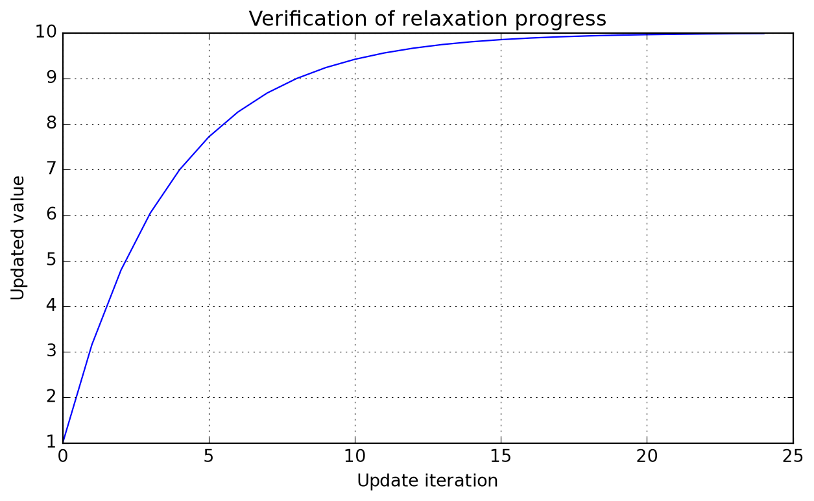
RelaxUpdate(
v_ini : NDArray[numpy.float64],
alpha : float = 0.5
) -> None:Relax solution for updating new iteration.
Parameters
v_ini : NDArray[numpy.float64]Initial guess of solution.
alpha : float = 0.5Fraction of old solution to use at updates.
update(
self : Any,
alpha : float
) -> None:Update relaxation coefficients.
Parameters
alpha : floatFraction of old solution to use at updates.
__call__(
self : Any,
v_new : NDArray[numpy.float64]
) -> NDArray[numpy.float64]:Evaluate new relaxed solution estimate.
Parameters
v_new : NDArray[numpy.float64]New solution estimate to be relaxed.
StabilizeNvarsConvergenceCheck(
*,
n_vars : int,
min_iter : int = 1,
max_iter : int = 1000000,
patience : int = 10,
rtol : float = 1e-10,
atol : float = 1e-20,
equal_nan : bool = False,
log_iter : bool = False
) -> None:Check stabilization towards a constant value along iterations.
Parameters
n_vars : intNumber of variables to be checked in problem.
min_iter : int = 1Minimum number of iterations before considering converged.
max_iter : int = 1000000Maximum number of iterations before considering failure.
patience : int = 10Number of consecutive convergences before declaring convergence.
rtol : float = 1e-10 See numpy.isclose for details.
atol : float = 1e-20 See numpy.isclose for details.
equal_nan : bool = False See numpy.isclose for details.
log_iter : bool = FalseIf true, log convergence message when achieved.
__call__(
self : Any,
state : NDArray[numpy.float64]
) -> bool:Check if all variables have stabilized at current iteration.
Parameters
state : NDArray[numpy.float64]Current solution state to be checked for convergence.
n_iterations(self : Any): -> int:Provides access to number of iterations performed.
ComposedStabilizedConvergence(
n_arrs : int,
**kwargs : Any
):Wrapper for checking stabilization of several arrays.
See StabilizeNvarsConvergenceCheck for keyword arguments; these are shared by all tested arrays. It is always possible to compose your own convergence checker using individual instances for more control over setup.
Parameters
n_arrs : intNumber of arrays to be checked for convergence.
kwargs : = None See StabilizeNvarsConvergenceCheck for details.
__call__(
self : Any,
*arrs : tuple[NDArray[numpy.float64], ...]
) -> bool:Check if all arrays have stabilized at current iteration.
Parameters
*arrs : tuple[NDArray[numpy.float64], ...]Arrays to be checked for convergence.
n_iterations(self : Any): -> int:Provides access to number of iterations performed.
Module warnings can be controlled throught the following attributes:
toggle_reactor_warnings(**kwargs : Any): -> None:Reverse truth value of warning flags.
Parameters
toggle_non_key_value : bool | None = NoneIf true, reverse truth value of warning about non key-value composition.
toggle_missing_species_name : bool | None = NoneIf true, reverse truth value of warning about missing species name.
toggle_unknown_species : bool | None = NoneIf true, reverse truth value of warning about unknown species.
Let’s start by creating a standard Cantera solution:
solution = ct.Solution("airish.yaml")
solution.TPY = 273.15, ct.one_atm, "N2: 0.78 O2: 0.21, AR: 0.01"Conversion of composition strings with name filtering is available:
composition_to_dict(
Y : str,
species_names : list[str] = []
) -> dict[str, float]:Convert a Cantera composition string to dictionary.
Parameters
Y : strComposition specification string, e.g. “O2: 1, N2: 3”.
species_names : list[str] = []List of valid species names for validation. If provided, only species in this list will be included in the output dictionary. If not provided, all species will be included.
composition_to_dict("O2: 1, teste: 1", solution.species_names){'O2': 1.0}It is also possible to set unit composition with species names; if you do not provide a validation list, all are are kept:
composition_to_dict("O2, N2, hello"){'O2': 1.0, 'N2': 1.0, 'hello': 1.0}When working with arrays, take care not to end up in the following situation:
composition_to_array(", teste: 1", solution.species_names)array([0., 0., 0.])There is also a helper for generating inputs for use with tabulate.tabulate:
solution_report(
sol : cantera.composite.Solution | cantera.composite.Quantity,
specific_props : bool = True,
composition_spec : str = 'mass',
selected_species : list[str] = [],
**kwargs : Any
) -> list[tuple[str, str, typing.Any]]:Generate a solution report for tabulation.
Parameters
sol : cantera.composite.Solution | cantera.composite.QuantityCantera solution object for report generation.
specific_props : bool = TrueIf true, add specific heat capacity and enthalpy.
composition_spec : str = 'mass' Composition units specification, mass or mole.
selected_species : list[str] = []Selected species to display; return all if a composition specification was provided.
show_mass : bool = 'False' If true, add mass of quantity to report if sol is a ct.composite.Quantity.
data = solution_report(solution, specific_props=True,
composition_spec="mass", selected_species=[])
print(tabulate(data))---------------------- -------- ------------
Temperature K 273.15
Pressure Pa 101325
Density kg/m³ 1.28735
Specific enthalpy J/(kg.K) -25114.9
Specific heat capacity J/(kg.K) 1004.95
mass: AR - 0.01
mass: N2 - 0.78
mass: O2 - 0.21
---------------------- -------- ------------Because sometimes Cantera lacks hard-copy utilities for certain classes, we provide simple wrappers that create new instances and set the state to the same of the source object. Nothing checked, nothing tested. A first of this kind is copy_solution, illustrated below:
copy_solution(sol : Solution): -> Solution:Makes a hard copy of a Solution object.
Parameters
sol : SolutionSolution to be copied.
newairs = copy_solution(solution)
newairs.TPX = 373.15, None, newairs.X
print(tabulate(solution_report(newairs)))---------------------- -------- -------------
Temperature K 373.15
Pressure Pa 101325
Density kg/m³ 0.942356
Specific enthalpy J/(kg.K) 75902.1
Specific heat capacity J/(kg.K) 1015.82
mass: AR - 0.01
mass: N2 - 0.78
mass: O2 - 0.21
---------------------- -------- -------------print(tabulate(solution_report(solution)))---------------------- -------- ------------
Temperature K 273.15
Pressure Pa 101325
Density kg/m³ 1.28735
Specific enthalpy J/(kg.K) -25114.9
Specific heat capacity J/(kg.K) 1004.95
mass: AR - 0.01
mass: N2 - 0.78
mass: O2 - 0.21
---------------------- -------- ------------In addition to this, there is copy_quantity, which proves quite useful in establishing an algebra of mixtures.
copy_quantity(qty : Quantity): -> Quantity:Makes a hard copy of a ct.composite.Quantity object.
Parameters
qty : QuantityQuantity to be copied.
air = copy_solution(solution)
air1 = ct.Quantity(air, mass=1.0)
air1.TPX = 373.15, None, newairs.X
air2 = copy_quantity(air1)
air2.TPX = 273.15, None, air2.X
mixair = air1 + air2
air1.T, air2.T, mixair.T(373.15, 273.15, 323.337485365699)Common daily work activity for the process engineer is to perform mass balances, but wait, …, gas flow rates are generally provided under normal conditions, and compositions may vary, so you need to compute normal densities first… whatever. This class provides a calculator wrapping a Cantera solution object so that your life gets easier.
NormalFlowRate(
mech : str | pathlib.Path,
*,
X : str | dict[str, float] | None = None,
Y : str | dict[str, float] | None = None,
T_ref : float = 273.15,
P_ref : float = 101325.0,
name : str | None = None
) -> None:Compute normal flow rate for a given composition.
This class makes use of the user defined state to create a function object that converts industrial scale flow rates in normal cubic meters per hour to kilograms per second. Nothing more, nothing less, it aims at helping the process engineer in daily life for this quite repetitive need when performing mass balances.
Parameters
mech : str | pathlib.PathPath to Cantera mechanism used to compute mixture properties.
X : str | dict[str, float] | None = None Composition specification in mole fractions. Notice that both X and Y are mutally exclusive keyword arguments.
Y : str | dict[str, float] | None = None Composition specification in mass fractions. Notice that both X and Y are mutally exclusive keyword arguments.
T_ref : float = 273.15Reference temperature of the system. If your industry does not use the same standard as the default values, and only in that case, please consider updating this keyword.
P_ref : float = 101325.0Reference pressure of the system. If your industry does not use the same standard as the default values, and only in that case, please consider updating this keyword.
name : str | None = NoneName of phase in mechanism, if more than one are specified within the same Cantera YAML database file.
Its simples use case is as follows:
nfr = NormalFlowRate("airish.yaml")
print(f"Convert 1000 Nm³/h to {nfr(1000.0):.5f} kg/s")Convert 1000 Nm³/h to 0.35903 kg/sIf the database file default composition does not suit you, no problems:
nfr = NormalFlowRate("airish.yaml", X="N2: 1")
print(f"Convert 1000 Nm³/h to {nfr(1000.0):.5f} kg/s")Convert 1000 Nm³/h to 0.34718 kg/sYou can also print a nice report to inspect the details of internal state. For more, please check its API documentation.
print(nfr.report())|------------------------|----------|--------------|
| Temperature | K | 273.15 |
| Pressure | Pa | 101325 |
| Density | kg/m³ | 1.24985 |
| Specific enthalpy | J/(kg.K) | -25864.9 |
| Specific heat capacity | J/(kg.K) | 1035.52 |
| mass: N2 | - | 1 |PlugFlowAxialSources(
n_reactors : int,
n_species : int
) -> None:Provides a data structure for use with PlugFlowChainCantera.
Helper data class for use with the solution method loop of the plug-flow reactor implementation. It provides the required memory for storage of source terms distributed along the reactor.
Parameters
n_reactors : intNumber of reactors in chain.
n_species : intNumber of species in mechanism.
Q : NDArray[np.float64] = NoneArray of external heat source [W].
m : NDArray[np.float64] = NoneArray of axial mass source terms [kg/s].
h : NDArray[np.float64] = NoneArray of enthalpy of axial mass source terms [J/kg].
Y : NDArray[np.float64, np.float64] = NoneArray of mass fractions of axial mass source terms [-].
PlugFlowChainCantera(
mechanism : str,
phase : str,
z : NDArray[numpy.float64],
V : NDArray[numpy.float64],
P : float = 101325.0,
K : float = 1.0,
smoot_flux : bool = False,
cantera_steady : bool = True
) -> None:Plug-flow reactor as a chain of 0-D reactors with Cantera.
Parameters
mechanism : strName or path to Cantera mechanism to be used.
phase : strName of phase to simulate (not inferred, even if a single is present!).
z : NDArray[numpy.float64]Spatial coordinates of reactor cells [m].
V : NDArray[numpy.float64]Volumes of reactor cells [m³].
P : float = 101325.0Reactor operating pressure [Pa].
K : float = 1.0Valve response constant (do not use unless simulation fails).
smoot_flux : bool = FalseApply a smoot transition function when internal stepping is performed; this is intended to avoid unphysical steady state approximations.
cantera_steady : bool = True If true, use Cantera’ s advance_to_steady_state to solve problem; otherwise advance over meaninful time-scale of the problem.
get_reactor_data(pfr : PlugFlowChainCantera): -> PlugFlowAxialSources:Wrapper to allocate properly dimensioned solver data.
Parameters
pfr : PlugFlowChainCanteraReactor for which data is to be allocated.
This module contains utilities for working with symbolic functions, especially in the context of engineering problems treated by Majordome models. It is mostly a wrapper around CasADi, organizing symbolic operations and providing additional functionality for function manipulation in a physical context.
A major issue when working with symbolic expressions and real-world data is that they do not support flow-control constructs like if statements. This is a problem when we want to represent functions that are defined piecewise, especially when algorithmic differentiation is involved.
As an example, take the parameterization of thermodynamic properties of chemical species. For quantitative purposes, to ensure high accuracy, researchers have found that it is best to use different polynomial fits for different temperature ranges. This means that the thermodynamic properties of a species are defined as piecewise functions of temperature, which is a problem when we want to use them in a symbolic context.
To tackle this issue in certain contexts, PiecewiseSymbolicFunction provides an interpolation between different ranges of the domain of a function. Internally it makes use of Heaviside functions to ensure that the function is continuous. This is not a perfect solution, as it does not guarantee differentiability at the breakpoints, but it is a good compromise between accuracy and simplicity. It is also worth noting that this class is not meant to be used in a general context, but rather in specific contexts where the function is known to be well-behaved.
PiecewiseSymbolicFunction(
breakpoints : list[float],
functions : list[typing.Any]
) -> None:Compose a symbolic piecewise function with CasADi.
Parameters
breakpoints : list[float]List of breakpoints where the function changes.
functions : list[typing.Any]List of functions to apply between breakpoints. The number of functions must be one less than the number of breakpoints.
Let’s illustrate its use with a simple example. We define two functions f and g, and we want to create a piecewise function that is equal to f for x < 0.5 and equal to g for x >= 0.5. Functions have being created such that they evaluate to the same value at the breakpoint, as the practical case that led to the class development, i.e. NASA-parameterization of thermochemical properties. Below we show how to create the piecewise function, evaluate it numerically and symbolically, and compute its derivative symbolically.
# Define two simple functions:
f = lambda x: x**2
g = lambda x: f(0.5) + (x - 0.5)
# Create the piecewise function:
F = PiecewiseSymbolicFunction([0, 0.5, 1], [f, g])
# Evaluate numerically:
x = np.linspace(-0.2, 1.2, 100)
y = F(x)
# Evaluate symbolically:
T = SX.sym("T")
Y = F(T)
# Create a function for evaluating the derivative:
ydot = Function("fdot", [T], [jacobian(Y, T)])Below we plot the piecewise function and its derivative. The function is continuous, but the derivative is not, as expected, although the transition is handled smoothly by the Heaviside functions. The red dashed line indicates the breakpoint at x = 0.5, where the function transitions from f to g.
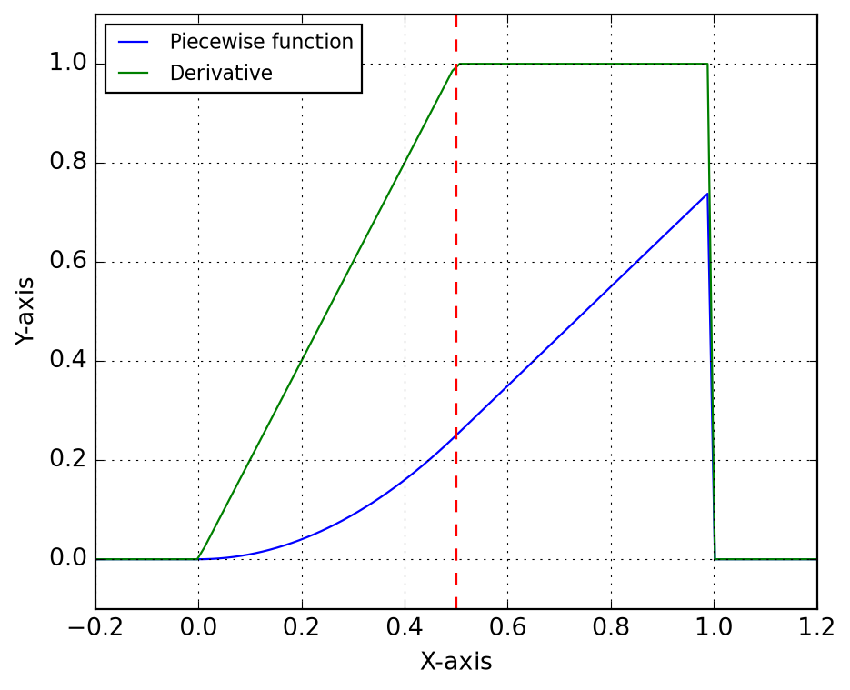
symbolic_thermo_factory(
species : Species,
T : SX
) -> AbstractSymbolicThermo:Create an AbstractSymbolicThermo object.
Parameters
species : SpeciesCantera species object, with NASA7 thermodynamic data.
T : SXTemperature variable (symbolic).
Suppose you need to create a symbolic representation of the NASA7 thermodynamic parameterization of molecular nitrogen, species of index 47 in the GRI-Mech 3.0 mechanism shipped with Cantera. Let’s start by loading and retrieving the thermodynamic data for this species.
import cantera as ct
gas = ct.Solution("gri30.yaml")
species = gas.species()[47]
thermo = species.thermoBelow we instantiate SymbolicThermo with the input data of the species. It is important to emphasize here that when building more complex systems, generally one should share the symbolic variables, e.g. temperature, across the different components of the system. For this reason, the constructor of symbolic thermodynamic classes expect the temperature symbol to be provided, instead of trying to create it internally; this is a design choice that will improve code robustness when handling mixtures and avoid many of the pitfalls of symbolic programming.
T = SX.sym("T")
nasa7 = symbolic_thermo_factory(species, T)You could instead directly instantiate Nasa7Thermo with the input data, but using the factory method SymbolicThermo.from_species is a better choice, as it will allow you to easily switch to a different thermodynamic model. Furthermore, it is the safe choice for loading entire databases.
nasa7 = Nasa7Thermo(T, species.thermo.input_data)
# This is just syntactic sugar for the above:
nasa7 = Nasa7Thermo.from_species(species, T)Here we illustrate the use of algorithmic differentiation to compute the derivative of the specific enthalpy with respect to temperature.
hdot = Function("hdot", [T], [jacobian(nasa7.h(T), T)])The above derivative is then confronted to the specific heat below:
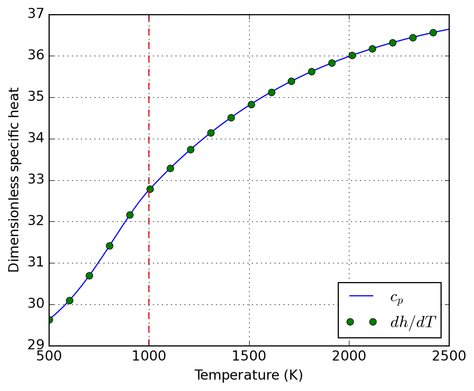
Finally, we compare the deviations between symbolic and numerical (Cantera) evaluation of the thermodynamic functions. This is not for error analysis, but a proof of correctness of the symbolic implementation.
# XXX: Cantera evaluates quantities per kmol! Divide by 1000 to get
# per mol, as the symbolic implementation does.
c_ct = np.array([0.001 * species.thermo.cp(T) for T in T_num])
h_ct = np.array([0.001 * species.thermo.h(T) for T in T_num])
s_ct = np.array([0.001 * species.thermo.s(T) for T in T_num])
error_c = np.mean(np.abs(nasa7._cp(T_num) - c_ct))
error_h = np.mean(np.abs(nasa7._h(T_num) - h_ct))
error_s = np.mean(np.abs(nasa7._s(T_num) - s_ct))
error_c, error_h, error_s(np.float64(4.334310688136611e-15),
np.float64(6.311893230304122e-12),
np.float64(3.2400748750660566e-14))Nasa7Thermo(
T : SX,
input_data : dict[str, typing.Any]
) -> None:NASA7 thermodynamic parameterization.
This class does not implement Horner polynomial evaluation, as the main use case is to create symbolic expressions that are then evaluated by CasADi, which can handle polynomial evaluation efficiently. This is intentional and allows for easy verification.
It aims at providing a similar interface as SpeciesThermo from Cantera, from which it retrieves the data. That means, molar properties are provided through cp, h, and s properties.
Parameters
T : SXTemperature variable (symbolic).
input_data : dict[str, typing.Any] NASA7 thermodynamic data, as provided by Cantera’s SpeciesThermo property input_data.
specific_heat(
T : Any,
a : list[float],
symbolic : bool = False
) -> casadi.casadi.Function | casadi.casadi.SX:Compose NASA7 specific heat parameterization.
Parameters
T : AnyTemperature variable (symbolic or numeric).
a : list[float]List of 7 NASA7 coefficients.
symbolic : bool = FalseWhether to return a symbolic expression.
enthalpy(
T : Any,
a : list[float],
symbolic : bool = False
) -> casadi.casadi.Function | casadi.casadi.SX:Compose NASA7 specific enthalpy parameterization.
Parameters
T : AnyTemperature variable (symbolic or numeric).
a : list[float]List of 7 NASA7 coefficients.
symbolic : bool = FalseWhether to return a symbolic expression.
entropy(
T : Any,
a : list[float],
symbolic : bool = False
) -> casadi.casadi.Function | casadi.casadi.SX:Compose NASA7 specific entropy parameterization.
Parameters
T : AnyTemperature variable (symbolic or numeric).
a : list[float]List of 7 NASA7 coefficients.
symbolic : bool = FalseWhether to return a symbolic expression.
compose(
cls : Any,
name : str,
T : casadi.casadi.SX | NDArray[numpy.float64] | float,
data : list[list[float]],
symbolic : bool = False
) -> list[casadi.casadi.Function | casadi.casadi.SX | NDArray[numpy.float64] | float]:Compose a list of NASA7 functions for given data.
Parameters
name : strName of the function (“specific_heat”, “enthalpy”, or “entropy”, i.e the static methods of this class).
T : casadi.casadi.SX | NDArray[numpy.float64] | floatTemperature variable (symbolic).
data : list[list[float]]List of NASA7 coefficient sets for each temperature range.
symbolic : bool = False Whether to return symbolic expressions or CasADi functions. Only relevant if T is symbolic.
from_species(
cls : Any,
species : Species,
T : SX
) -> typing.Self:Create a Nasa7Thermo object from a Cantera species.
Parameters
species : SpeciesCantera species object, with NASA7 thermodynamic data.
T : SXTemperature variable (symbolic).
symbolic_transport_factory(
species : Species,
T : SX
) -> AbstractSymbolicTransport:Create an AbstractSymbolicTransport object.
Parameters
species : SpeciesCantera species object, with transport data.
T : SXTemperature variable (symbolic).
In some fields of research, such as porous media or composite materials, the evaluation of effective thermal properties are key for simulation of macroscopic application cases. Class EffectiveThermalConductivity implements (static) thermal conductivity models for this sort of applications, including:
Maxwell-Garnett approximation (EffectiveThermalConductivity.maxwell_garnett) as exposed in (Hanein et al. 2017); further discussion of its origin and applicability is provided by (Kiradjiev et al. 2019).
For porous media (packed bed in the context) with enhanced radiative effects the model by (Singh and Kaviany 1994) as discussed by (Kee et al. 2017) is implemented (EffectiveThermalConductivity.singh1994).
Its name is quite long, let’s start by getting an alias before evaluating the desired models:
etc = EffectiveThermalConductivity()Using Maxwell approximation, we could estimate the the effective thermal conductivity of a packed bed of particles in a matrix of air; assume particles loosly embeded in air and the following properties; the computed effective thermal conductivity is shown to approach the air limit:
phi = 0.30 # Loosely packed solids [30%v]
k_g = 0.025 # Air thermal conductivity [W/(m.K)]
k_s = 1.000 # Solids thermal conductivity [W/(m.K)]
etc.maxwell_garnett(phi, k_g, k_s)0.05396039603960396For the limit of high temperatures, it is usually important to account for particle-particle radiation heat transfer; this introduces a \(T^3\) dependence on temperature, as one should expect by linearizing Stefan-Boltzmann law.
Please notice that these models compute different things; while Maxwell approximation computes the medium properties (to approximate matrix-inclusion as a single domain), Singh’s model accounts only for solids properties. One might wish to combine them (warning: unverified validity!) to evaluate overall medium thermal conductivity. See the references in the class documentation for further discussion, specially the extension proposed by Kiradjiev (2019), which leads to a result similar to the assymptotic behavior displayed below.
d_p = 0.005
eps = 0.9
T = np.linspace(300, 1500, 50)
k_eff_s = etc.singh1994(T, phi, d_p, k_s, eps)
k_eff_m = etc.maxwell_garnett(phi, k_g, k_eff_s)
plot_etc((T, k_eff_s, k_eff_m)).resize(10, 5)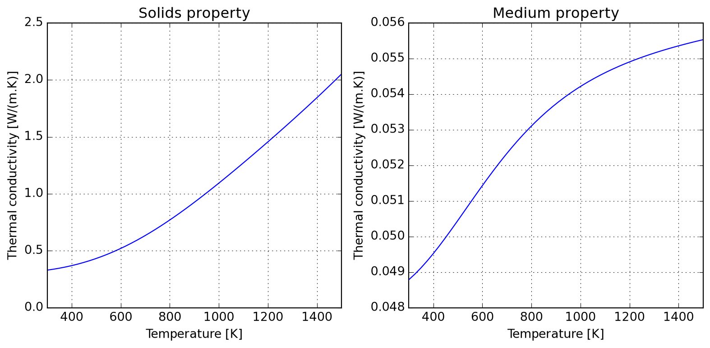
Due to kinetic theory implications, gas thermal conductivity tend to have a positive slope in temperature; the following illustrates how this can be accounted for and the roughly linear behaviour introduced when computing medium properties within air.
gas = ct.Solution("airish.yaml")
sol = ct.SolutionArray(gas, (T.shape[0],))
sol.TP = T, None
k_gas = sol.thermal_conductivity
k_eff_m = etc.maxwell_garnett(phi, k_gas, k_eff_s)
plot_etc((T, k_gas, k_eff_m)).resize(10, 5)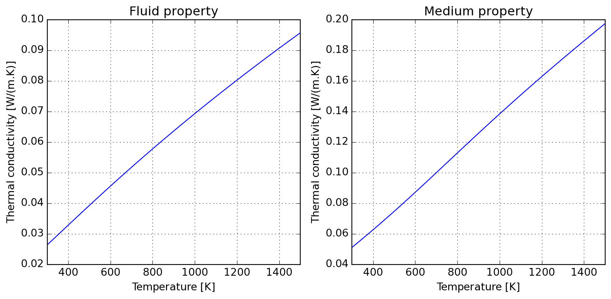
A dimensionless numbers calculator is provided for gas flows; it currently has a certain number of groups which are all evaluated by definition (which might change according to your field, please check the docs). The mechanics of using the class can be resumed to:
The meaning of the tuple of arguments provided to set_state is specified by tuple_name="TPX", which defaults to temperature, pressure, and molar proportions. Any triplet allowed by Cantera can be specified here.
Tw = 1000.0 # Wall temperature [K]
U = 10.0 # Characteristic velocity [m/s]
D = 0.05 # Pipe diameter [m]
L = 1.0 # Pipe length [m]
calculator = SolutionDimless("airish.yaml")
calculator.set_state(300.0, 101325.0, "N2: 1", tuple_name="TPX")
Re = calculator.reynolds(U, D)
Pr = calculator.prandtl()
Sc = calculator.schmidt()
print(calculator.report())-------- ------------ ---------------
Reynolds 31460.9 U=10.0, L=0.05
Prandtl 0.709327
Schmidt 0.761752 mix_diff_coeffs
-------- ------------ ---------------If you prefer to have direct access to the internal solution, you can set properties as usual in Cantera, but you need to keep in mind to call update() to refresh the internal state of the calculator. Every time the properties are updated, the internal buffer of computed dimensionless numbers is refreshed, as you migth notice in the following table.
calculator.solution.TPX = 300.0, 101325.0, "N2: 1"
calculator.update()
Pe_m = calculator.peclet_mass(U, L)
Pe_h = calculator.peclet_heat(U, L)
Gr = calculator.grashof(Tw, D)
Ra = calculator.rayleigh(Tw, D)
print(calculator.report())------------- ---------------- ------------------------------
Péclet (mass) 479308 U=10.0, L=1.0, mix_diff_coeffs
Péclet (heat) 446321 U=10.0, L=1.0
Grashof 1.13242e+07 Tw=1000.0, H=0.05, g=9.80665
Rayleigh 8.03259e+06 Tw=1000.0, H=0.05, g=9.80665
------------- ---------------- ------------------------------When performing CFD simulations of turbulent flows, it is important to ensure that the first layer of cells adjacent to the wall are properly graded to capture the boundary layer effects. The WallGradingCalculator class provides a simple interface for calculating the first layer thickness based on the desired dimensionless wall distance \(y^+\) and the flow properties.
The following example illustrates how to use the WallGradingCalculator to compute the first layer thickness for a turbulent flow of air at 700°C and atmospheric pressure, with a characteristic velocity of 10 m/s and a pipe diameter of 0.025 m. The skin friction factor is computed using the SkinFrictionFactor.smooth_wall method, which is appropriate for turbulent flows over smooth walls.
# First create a solution object with the desired state:
sol = SolutionDimless("airish.yaml")
sol.set_state(973.15, 101325, "N2: 0.79, O2: 0.21")
# Define a function to compute the skin friction factor for turbulent flow:
def f_tur(Re):
""" Turbulent skin friction factor for smooth walls."""
return SkinFrictionFactor.smooth_wall(Re, check=False) / 8
# Define the desired dimensionless wall distance y+:
y_plus = 1.0
# Instantiate the wall grading calculator from the solution and compute
# the first layer thickness with the provided skin friction factor:
calc = WallGradingCalculator.from_solution(sol, L=0.025, U=10.0)
y_first = calc.first_layer(y_plus, skin_factor=f_tur)
print(f"First layer thickness: {1e6*y_first:.0f} µm")First layer thickness: 153 µmWallGradingCalculator(
*,
L : float,
U : float,
rho : float,
mu : float,
skin_factor : typing.Optional[typing.Callable] = None
) -> None:Helper class for estimating first cell thickness given y+.
Parameters
L : floatCharacteristic length of problem [m].
U : floatCharacteristic velocity of problem [m/s].
rho : floatDensity of fluid [kg/m³].
mu : floatDynamic viscosity of fluid [Pa.s].
skin_factor : typing.Optional[typing.Callable] = None Skin friction factor to be used for calculating wall shear stress and friction velocity; if None, then these values are not computed and first_layer method will raise an error if called. If provided, it should be a callable that takes Reynolds number as input and returns the skin friction factor. Some examples of skin friction factors are provided in SkinFrictionFactor class.
set_skin_factor(
self : Any,
skin_factor : typing.Callable
) -> None:Set skin friction factor and compute related properties.
Parameters
skin_factor : typing.Callable See __init__ for details.
first_layer(
self : Any,
y_plus : Any,
skin_factor : typing.Optional[typing.Callable] = None
) -> float:Height of first cell for given y+ value [m].
Parameters
y_plus : AnyDesired y+ value for first cell.
skin_factor : typing.Optional[typing.Callable] = None See __init__ for details.
from_solution(
cls : Any,
obj : SolutionDimless,
L : float,
U : float,
skin_factor : typing.Optional[typing.Callable] = None
) -> typing.Self:Alternative constructor from dimensionless solution.
Parameters
obj : SolutionDimlessObject providing access to solution and its properties.
L : floatCharacteristic length of problem [m].
U : floatCharacteristic velocity of problem [m/s].
skin_factor : typing.Optional[typing.Callable] = None See __init__ for details.
wall_shear_stress(
rho : Any,
U : Any,
Cf : Any
) -> float:Wall shear stress estimater from friction factor [Pa].
Parameters
rho : AnyDensity of fluid [kg/m³].
U : AnyCharacteristic velocity of problem [m/s].
Cf : AnySkin friction factor [-].
friction_velocity(
tw : Any,
rho : Any
) -> float:Dimensionless friction velocity.
Parameters
tw : AnyWall shear stress [Pa].
rho : AnyDensity of fluid [kg/m³].
SkinFrictionFactor():Skin friction factors for y+ calculations.
laminar(Re : Any): -> float:Laminar limit theoretical value.
Parameters
Re : AnyReynolds number of flow.
smooth_wall(
Re : Any,
check : bool = True
) -> float:Blasius smooth wall approximation.
As described here.
Parameters
Re : AnyReynolds number of flow.
check : bool = TrueWhether to check if Reynolds number is in the valid range for this approximation, which is [4e3; 1e5]. If not, a warning is printed.
To the author’s knowledge, there is no standard tool to convert Cantera transport data to Sutherland parameters for use with OpenFOAM, what led to the motivation to develop SutherlandFitting. This simple class wraps a Cantera solution object, which it makes use for fitting Sutherland parameters to export as a table (to be used elswhere), and also allows for retrieving a converted database in OpenFOAM compatible format. The following example should be self-explanatory:
T = np.linspace(500, 2500, 100)
sutherland = SutherlandFitting("airish.yaml")
sutherland.fit(T, species_names=["O2", "N2"])
coef = sutherland.coefs_table
coef| species | As [uPa.s] | Ts [K] | RMSE [uPa.s] | |
|---|---|---|---|---|
| 0 | O2 | 1.873876 | 229.321211 | 0.527484 |
| 1 | N2 | 1.619350 | 226.141806 | 0.470152 |
If needed, it is also possible to have direct access to the viscosity data used in parameter fitting:
sutherland.viscosity.head()| T | O2 | N2 | |
|---|---|---|---|
| 0 | 500.000000 | 30.045456 | 26.123142 |
| 1 | 520.202020 | 30.886884 | 26.845049 |
| 2 | 540.404040 | 31.713820 | 27.554780 |
| 3 | 560.606061 | 32.527146 | 28.253075 |
| 4 | 580.808081 | 33.327662 | 28.940602 |
Because RMSE compresses all the error in a single value, you can check graphically where the deviations happen in the interval:
plot = sutherland.plot_species("N2")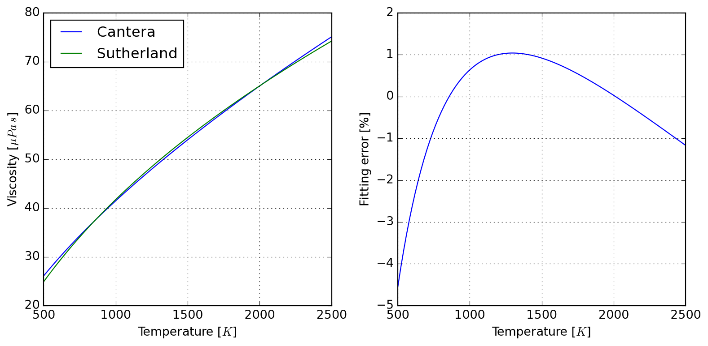
Finally, it also responds to its initial goal of exporting values in OpenFOAM format:
print(sutherland.to_openfoam())
/* --- RMSE 0.5274842993902649 ---*/
"O2"
{
transport
{
As 1.8738763185e-06;
Ts 2.2932121082e+02;
}
}
/* --- RMSE 0.4701517988286822 ---*/
"N2"
{
transport
{
As 1.6193495479e-06;
Ts 2.2614180620e+02;
}
} Radiative properties of gases are often required when participating media characteristics imply so. Here we implement the WSGG model of Sadeghi et al. (2021) in class WSGGRadlibBordbar2020. The basic usage of the model to estimate total emissivity is done as follows:
model = WSGGRadlibBordbar2020()
model(L=1, T=1000, P=101325, x_h2o=0.18, x_co2=0.08, fvsoot=0.0)np.float64(0.3316616644335577)Evaluation of the model against original source of Bordbar (2014) is satisfactory, as follows:
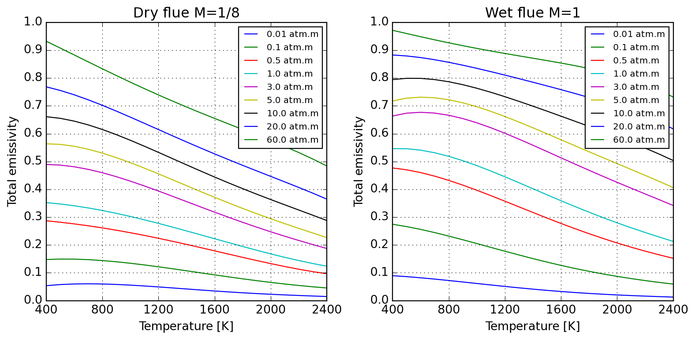
Absorption coefficients for pure substances only reproduce approximately values reported by Bordbar (2020).
model(L=1, T=300, P=101325, x_h2o=0, x_co2=1)
model.absorption_coefs[1:]array([3.388079e-02, 4.544269e-01, 4.680226e+00, 1.038439e+02])model(L=1, T=300, P=101325, x_h2o=1, x_co2=0)
model.absorption_coefs[1:]array([ 0.07703541, 0.8242941 , 6.854761 , 65.93653 ])Below we illustrate the application of WSGGRadlibBordbar2020 to predict the emissivity of \(x\mathrm{H_2O}-(1-x)\mathrm{CO_2}\) mixtures over a broad temperature range applicable to the analysis of combustion processes. One observes an important participation of flue gases, especially at lower temperatures.
wsgg = WSGGRadlibBordbar2020()
@np.vectorize
def emissivity(T, X, L=1, P=101325):
return wsgg(L=L, T=T, P=P, x_h2o=X, x_co2=1-X, fvsoot=0.0)
T = np.linspace(800, 2400, 100)
X = np.linspace(0, 0.7, 100)
T, X = np.meshgrid(T, X)
eps = emissivity(T, X)
plot_emissivity(T, X, eps)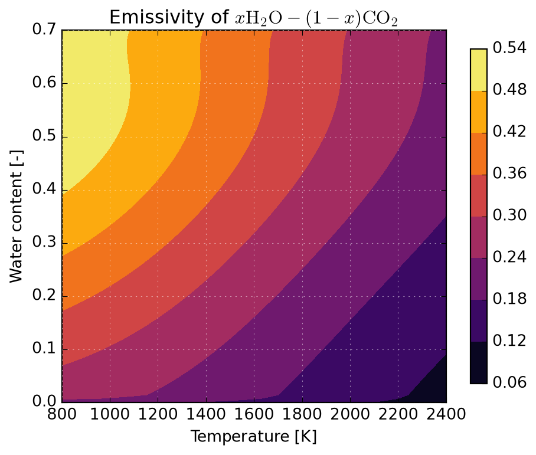
Upcoming…
Assume a simple concentration-dependent diffusion in the absence of external driving forces; in this introduction we chose to model the diffusive flux through Fick’s constitutive (first) law stated below, where \(D\) is the diffusion coefficient that may depend on position \(x\) and/or concentration \(c\), i.e. \(D\equiv{}D(x, c)\). It states that diffusive flux of an species has the composition gradient as a driver force; the negative sign indicates that diffusion occurs from high to low concentration regions.
\[ J=-D\dfrac{\partial{}c}{\partial{}x} \]
We can anticipate here that this can be the case for simple diluted systems, but interactions between species must be considered in concentrated solutions, what is generalized by the Irreversible Thermodynamics by Onsager (1931a) and Onsager (1931b). Here we emphasize again the word model: empirical observation has led scientists to represent reality through such an approximation; different models can be used for the same physics with their applicability limited to certain scenarios. Properly selecting an applicable model is the role of the researcher/engineer, what is outside our scope here; in what follows we will focus on how to solve balance equations for a given model.
Simply put, diffusion equation solves for a local mass balance; and mathematically, a local balance leads to a divergence operation. Following this idea, it can be shown that the time derivative of concentration \(c\) at one location is given by the divergence - which collapses to the spatial derivative - of the negative of mass flux given by Fick’s (first) law (or in general any other constitutive law/model describing the mass flux); sometimes this form is called Fick’s second law in the literature. Given the possible non-linearity introduced by diffusion coefficient \(D\), the derivative in the right-hand side is not expanded. In Cartesian coordinate system, the governing diffusion equation in one dimension writes:
\[ \dfrac{\partial{}c}{\partial{}t}= \dfrac{\partial{}}{\partial{}x} \left(D\dfrac{\partial{}c}{\partial{}x}\right) \]
This is the form of the diffusion equation that is discussed in what follows.
import pandas as pd
import sympy as sp
from abc import ABC
from sympy import expand, solve
from pandas import DataFrame
from majordome.utilities import sympy_symbols_factory
sp.init_printing(use_latex="mathjax")Create all of the SymPy symbols used in the FVM derivations.
sympy_symbols_factory(
# General FVM parameters and variables.
"delta", "tau",
# Boundary condition parameters and variables
"h", ("c_inf", r"c_{\\infty}"),
# Cell-centered variables (compositions):
"c_0", "c_E", "c_P", "c_W", "c_G", "c_B",
# Cell-centered variables (diffusion coefficients):
"D_E", "D_P", "D_W", "D_G", "D_B",
# Face-centered variables (diffusion coefficients):
"D_e", "D_w", "D_g", "D_b",
# Face-centered variables (Fourier numbers):
"Fo_e", "Fo_w", "Fo_g", "Fo_b",
# Dump all of the above into the global namespace:
scope = globals()
)Create a helper class for representing the standard format of finite volume equations. This class extends sympy.Eq with some utilities for working with the equations in a more convenient way for our purposes. The main idea is to have a consistent way to represent the equations in the form \(F(x)=0\), where \(F\) is a function of the unknowns \(x\). This allows us to easily extract coefficients and tabulate them in a consistent way across the notes.
class Eq(sp.Eq):
""" Standard LHS format of finite volume equation. """
def __new__(cls, lhs, rhs=0, **kwargs):
return sp.Eq.__new__(cls, sp.expand(lhs), 0, **kwargs)
def __truediv__(self, other):
return Eq(self.lhs / other)
def __rtruediv__(self, other):
return Eq(other / self.lhs)
def __mul__(self, other):
return Eq(self.lhs * other)
def __rmul__(self, other):
return Eq(other * self.lhs)
def subs(self, *args, **kwargs):
""" Substitute into the equation LHS. """
return Eq(self.lhs.subs(*args, **kwargs))
def solve_for(self, var):
""" Solve the equation for the specified variable. """
return sp.solve(self, var)
def coefficients(self, *, variables=None, op=lambda x: x):
""" Extract coefficients for the specified variables. """
if variables is None:
variables = list(self.lhs.free_symbols)
variables = [v for v in variables if str(v).startswith("c_")]
variables = [v for v in variables if v in self.lhs.free_symbols]
return {var: op(self.lhs.coeff(var)) for var in variables}
def tabulate(self, **kwargs):
""" Helper to display a table of coefficients for the problem. """
coefs = self.coefficients(**kwargs).items()
return pd.DataFrame(coefs, columns=["Variable", "Coefficient"])To solve the diffusion equation numerically, we employ the finite volume method (FVM). The first step to establish a FVM scheme consists of integrating the governing equation over a control volume \(P\) from \(w\) (west face) to \(e\) (east face) and over a time interval from \(0\) to \(\tau\). The left-hand side is first integrated over time as it represents a storage term, meaning that it measures how much the average concentration changes in the control volume over the time-step. The right-hand side is a flux term, and using similar arguments its natural integration is performed over space. Also, the order of integration can be exchanged due to the smoothness assumptions considered here. For more details, please check Patankar (1980).
\[ \int_{w}^{e}\int_{0}^{\tau} \dfrac{\partial{}c}{\partial{}t}\:dt\:dx= \int_{0}^{\tau}\int_{w}^{e} \dfrac{\partial{}}{\partial{}x} \left(D\dfrac{\partial{}c}{\partial{}x}\right)\:dx\:dt \]
This double integration allows us to convert the partial differential equation into a form suitable for numerical discretization. Evaluating the innermost integrals leads to:
\[ \int_{w}^{e} \left(c_{P}-c_{P}^{0}\right)\:dx= \int_{0}^{\tau} \left[ \left(D\dfrac{\partial{}c}{\partial{}x}\right)_{e}- \left(D\dfrac{\partial{}c}{\partial{}x}\right)_{w} \right] \:dt \]
Here, \(c_P^0\) and \(c_P\) represent the concentration at the center of the control volume \(P\) at times \(0\) and \(\tau\), respectively. A convention of not adding a superscript to time \(\tau\) is adopted here, unless required by the context. The right-hand side represents the net flux into the control volume through its east and west faces. Assuming the concentration is uniform within each control volume and the fluxes are constant over the time interval, we obtain:
\[ \left(c_{P}-c_{P}^{0}\right) \dfrac{\delta}{\tau}= \left(D\dfrac{\partial{}c}{\partial{}x}\right)_{e}- \left(D\dfrac{\partial{}c}{\partial{}x}\right)_{w} \]
where \(\delta\) is the width of the control volume. This equation represents a discrete time-step of the diffusion equation for a single control volume, where one still needs to specify a discretization of the gradients, i.e. how the fluxes are evaluated at a cell face. A simple introductory approach is to use forward differences, where the composition gradients are approximated as first differences between neighbors.
To approximate the aforementioned gradients, the next cell introduces the expressions for the fluxes at east and west faces. These helper functions ensure the order of arguments is consistent with the finite difference definition given above.
def diffusion_flux(D, c_left, c_right, delta):
""" Compute the forward difference diffusion flux between two points. """
return -D * (c_right - c_left) / delta
def diffusion_flux_east(D=D_e, c_right=c_E, delta=delta):
""" Compute the diffusion flux to the east cell. """
return diffusion_flux(D, c_P, c_right, delta=delta)
def diffusion_flux_west(D=D_w, c_left=c_W, delta=delta):
""" Compute the diffusion flux to the west cell. """
return diffusion_flux(D, c_left, c_P, delta=delta)For standardizing equations as organized as \(F(x)=0\) we override sympy.Eq with Eq class used in what follows. This allows us to easily extract coefficients and tabulate them in a consistent way across the notes. Below we compose the diffusion equation with help of SymPy and the above extensions. Notice that when compositing the right-hand side rhs we multiply by -1 because we are integrating the negative of the fluxes.
J_w = diffusion_flux_west()
J_e = diffusion_flux_east()
lhs = (c_P - c_0) * delta / tau
rhs = -1 * (J_e - J_w)
eq = Eq(lhs - rhs)
eq\(\displaystyle - \frac{D_{e} c_{E}}{\delta} + \frac{D_{e} c_{P}}{\delta} + \frac{D_{w} c_{P}}{\delta} - \frac{D_{w} c_{W}}{\delta} - \frac{c_{0} \delta}{\tau} + \frac{c_{P} \delta}{\tau} = 0\)
Here, \(c_E\) and \(c_W\) are the concentrations at the eastern and western neighboring control volumes, respectively, and \(D_e\) and \(D_w\) are the effective diffusion coefficients at the east and west faces of the control volume. Patankar (1980) shows that the evaluation of these diffusion coefficients is not arbitrary and for conservation (here the continuity of flux across the interface) to be respected one must take the harmonic mean of neighboring cells:
\[ D_{k}=2\frac{D_{i}D_{j}}{D_{i}+D_{j}} \]
A final step to get a linear form of the problem is multiplying both sides by \(\tau/\delta\) and rearranging terms. This form clearly shows the contribution of each neighboring concentration to the rate of change at point P. The coefficient of \(c_P\) is negative, representing the outflow from the central node, while the coefficients of \(c_E\) and \(c_W\) are positive, representing inflow from the neighboring nodes.
\(\displaystyle - \frac{D_{e} c_{E} \tau}{\delta^{2}} + \frac{D_{e} c_{P} \tau}{\delta^{2}} + \frac{D_{w} c_{P} \tau}{\delta^{2}} - \frac{D_{w} c_{W} \tau}{\delta^{2}} - c_{0} + c_{P} = 0\)
Introducing dimensionless coefficients \(Fo_{k}\), the Fourier number for mass transfer (more generally referred to as \(\mathcal{Fo}_{m}\)), we obtain the final discrete form. It represents the dimensionless diffusion number, which determines the stability and accuracy of the numerical scheme. The subscript \(k\) refers to either the east (\(e\)) or west (\(w\)) face.
\[ Fo_{k}=\dfrac{\tau{}D_{k}}{\delta^2} \]
This definition is provided below for helping with the replacements that follow.
def fourier_number(D, tau, delta):
""" Compute the Fourier number for the given parameters. """
return D * tau / delta**2
SUBS_FOURIER = [
(fourier_number(D_e, tau, delta), Fo_e),
(fourier_number(D_w, tau, delta), Fo_w),
(fourier_number(D_g, tau, delta), Fo_g),
(fourier_number(D_b, tau, delta), Fo_b),
]Performing the replacements with help of SymPy:
eq = eq.subs(SUBS_FOURIER)
eq\(\displaystyle - Fo_{e} c_{E} + Fo_{e} c_{P} + Fo_{w} c_{P} - Fo_{w} c_{W} - c_{0} + c_{P} = 0\)
Notice that so far nothing has been said with respect to the instant at which the right-hand side is evaluated. The obvious solution would be to take \(c_{0}\equiv{}c_{P}^{0}\) as it is currently known, but for numerical stability reasons we will continue here with an implicit scheme so that all values other than \(c_{0}\) are defined to be evaluated at time \(\tau\), i.e. \(c_{K}\equiv{}c_{K}^{\tau}\), in phase with the notation convention introduced above.
Because it is more convenient for symbolic manipulations with SymPy, the problem is currently written as \(F(c)=0\), i.e. all elements are on the left-hand side. Care must be taken to properly interpret the signs of the coefficients below.
coefs = eq.coefficients(variables=[c_0, c_E, c_P, c_W, c_G, c_B])
coefs\(\displaystyle \left\{ c_{0} : -1, \ c_{E} : - Fo_{e}, \ c_{P} : Fo_{e} + Fo_{w} + 1, \ c_{W} : - Fo_{w}\right\}\)
Because it is more readable, a helper utility is provided to tabulate them:
eq.tabulate(variables=[c_0, c_E, c_P, c_W, c_G, c_B])| Variable | Coefficient | |
|---|---|---|
| 0 | c_0 | -1 |
| 1 | c_E | -Fo_e |
| 2 | c_P | Fo_e + Fo_w + 1 |
| 3 | c_W | -Fo_w |
So far all we have derived are the internal balances of the system, we still lack proper boundary conditions. It should be evident by now that we have formulated a tridiagonal matrix for representing the 1-D system: there are 3 unknowns at step \(\tau\) (\(c_W\), \(c_P\), and \(c_E\)) and a currently known field \(c_0\).
In what follows we will workout the three families of boundary conditions: Dirichlet (type 1), Neumann (type 2), and the more general Robin (type 3). Following this sequence will create the required intuition for deriving the progressively more complex conditions. In practice, for diffusion in solids often only the implementation of Robin conditions is required, as it will be discussed later. Our goal at presenting types 1 and 2 is simply to introduce the tooling required for working out type 3 boundary condition; they will not be treated in full detail, leaving the full discussion for later.
The implementation of boundary conditions requires special treatment of the control volumes at the domain boundaries. The general form for a boundary control volume is:
\[ \left(c_{P}-c_{P}^{0}\right) \dfrac{\delta}{\tau}= \text{flux}_{\text{interior}} - \text{flux}_{\text{boundary}} \]
It is worth here repeating the partial development derived in the previous section for an analogy:
\[ \left(c_{P}^{\tau}-c_{P}^{0}\right) \dfrac{\delta}{\tau}= D_{e}\dfrac{c_{E}-c_{P}}{\delta}- D_{w}\dfrac{c_{P}-c_{W}}{\delta} \]
Please, notice that from now on we make use of class StandardProblem for the end of representing a canonical discrete equation. It encodes the results obtained in the previous section and is also repeated below:
class StandardProblem:
""" Standard format of finite volume diffusion problem in 1-D. """
@staticmethod
def get_lhs(**kw):
""" Standard format of inner LHS of problem. """
return (c_P - c_0) * delta / tau
@staticmethod
def get_rhs(**kw):
""" Standard format of inner RHS of problem. """
J_e = kw.get("J_e", diffusion_flux(D_e, c_P, c_E, delta))
J_w = kw.get("J_w", diffusion_flux(D_w, c_W, c_P, delta))
return -1 * (J_e - J_w)
@staticmethod
def full_expression(subs_lhs=[], subs_rhs=[], subs_fourier=False, **kw):
""" Canonical form of problem set as `f(c)=0`. """
lhs = StandardProblem.get_lhs(**kw).subs(subs_lhs)
rhs = StandardProblem.get_rhs(**kw).subs(subs_rhs)
eq = Eq(lhs - rhs) * tau / delta
return eq.subs(SUBS_FOURIER) if subs_fourier else eqStandardProblem.full_expression()\(\displaystyle - \frac{D_{e} c_{E} \tau}{\delta^{2}} + \frac{D_{e} c_{P} \tau}{\delta^{2}} + \frac{D_{w} c_{P} \tau}{\delta^{2}} - \frac{D_{w} c_{W} \tau}{\delta^{2}} - c_{0} + c_{P} = 0\)
Let’s start by the Dirichlet, or fixed concentration, boundary condition (type 1), for which the concentration at the boundary face is prescribed, i.e. \(c_{\text{B}} = c_{\text{prescribed}}\). Notice that before using this we need to make a choice regarding the computational grid (mesh); you could have half-volumes on boundaries, fictitious volumes (sometimes called ghost cells), or immersed nodes over the boundary.
Partial control volumes on boundaries are not desirable as they introduce implementation complexities in code and lack conservation (especially in higher dimensions), see a discussion by Maliska (2004) (section 3.7) for details. In what follows we discuss immersed nodes and extended domains with ghost cells. This last solution implies considerably more unknowns in 3-D problems, for which different variants of FVM will be discussed at a more advanced point.
Immersed boundary: Assume the last cell on west boundary is indexed as \(P\); over its west boundary we find a node where prescribed composition \(c_{B}\) is enforced - and the corresponding diffusion coefficient \(D_{b}\). Notice that this node does not belong to the cell, nor represents a half-cell, but lies over its boundary. To keep it simple, let’s assume \(c_{B}\) is constant (time-dependency would slightly complicate the development and it is worth postponing it to the algorithm development discussion), so keeping our fully implicit scheme leads to We start by computing the mass flux from the boundary node to the first cell center; this flux is computed using half-cell length \(\delta/2\) for the derivative approximation.
J_w = diffusion_flux_west(D_b, c_B, delta/2)
J_w\(\displaystyle - \frac{2 D_{b} \left(- c_{B} + c_{P}\right)}{\delta}\)
This expression of flux is used as replacement for the west boundary in the full equation:
eq = StandardProblem.full_expression(J_w=J_w, subs_fourier=True)
eq\(\displaystyle - 2 Fo_{b} c_{B} + 2 Fo_{b} c_{P} - Fo_{e} c_{E} + Fo_{e} c_{P} - c_{0} + c_{P} = 0\)
The coefficients for the first row of the matrix problem are summarized below:
eq.tabulate()| Variable | Coefficient | |
|---|---|---|
| 0 | c_P | 2*Fo_b + Fo_e + 1 |
| 1 | c_B | -2*Fo_b |
| 2 | c_0 | -1 |
| 3 | c_E | -Fo_e |
There are two main features in this equation: the coefficient of cell \(P\) now depends on the prescribed composition through \(\alpha_{b}\) and a modification is applied to the right-hand side at boundaries where solution is prescribed. That’s a good reminder that the array of coefficients must correspond to the number of interfaces, not cells - more on this later.
The immersed boundary approach presented above is simple. Nonetheless, it requires a different calculation of boundary nodes with respect to the volume, but that comes with the advantage that no additional equation has been added to the system. Let’s now explore the extended domain alternative.
Ghost cell: As above, assume the last cell on west boundary is indexed as \(P\). Consider another ghost cell to its left being denoted \(G\) (fictitious cell in place of \(W\)). The node \(c_{B}\) where composition is enforced and the same details presented above still apply here. Here we repeat the immersed node flux computation and do the same with respect to ghost cell \(G\).
Our goal is to identify an equation for \(c_{G}\) so that it is solved along with the interior points and ensures the same flux as the immersed node. To identify the compatible ghost composition we equate the fluxes by both definitions and solve for \(c_{G}\). The following steps repeat what we have seem so far and should be self-explanatory.
J_w1 = diffusion_flux_west(D_b, c_B, delta/2)
J_w2 = diffusion_flux_west(D_g, c_G, delta)
Eq(J_w1 - J_w2).tabulate()| Variable | Coefficient | |
|---|---|---|
| 0 | c_P | -2*D_b/delta + D_g/delta |
| 1 | c_G | -D_g/delta |
| 2 | c_B | 2*D_b/delta |
Care must be taken for interpreting the above result; here \(c_{G}\) takes the diagonal position and \(c_{P}\) is the first east cell in the first row of the problem’s matrix. There is no previous state (no coefficient on \(c_{0}\)), but a source term based on \(c_{B}\) that must be placed on the right-hand side for solution. This is the equation we are looking for to extend the system.
Since this equation has \(D_{g}\) as a coefficient, an initial guess for \(c_{G}\) is required. The boundary \(B\) being the same interface for evaluation of \(D_{g}\), for both fluxes to equate one needs to make sure the same diffusivity is evaluated there. Thus we make \(D_{b}\equiv{}D_{g}\), what seems physically reasonable but so far not supported by any mathematical argument:
c_G_sol = Eq(J_w1 - J_w2).solve_for(c_G)[0]
c_G_sol = c_G_sol.subs(D_b, D_g)
c_G_sol\(\displaystyle \frac{2 D_{g} c_{B} - D_{g} c_{P}}{D_{g}}\)
This simply says that the composition is linearly extrapolated, with the distances from cell centers to the boundary being used as weighting factors. It ensures the problem is initialized the same as the immersed boundary as we made \(D_g=D_b\).
One could think about solving for \(c_G\) and using the result in the standard balance equation, but doing so falls back to the immersed boundary approach. Replacing the solution in J_w2 simply gets back to the initial point and does not produce one extra equation!
J_w = J_w2.subs(c_G, c_G_sol)
eq = StandardProblem.full_expression(J_w=J_w, subs_fourier=True)
eq.tabulate()| Variable | Coefficient | |
|---|---|---|
| 0 | c_P | Fo_e + 2*Fo_g + 1 |
| 1 | c_B | -2*Fo_g |
| 2 | c_0 | -1 |
| 3 | c_E | -Fo_e |
Next, let’s handle Neumann boundary condition (type 2). For a fixed flux boundary condition, the flux at the boundary is prescribed at \(q_{B}\). A special case arises when one imposes zero flux (impermeable boundary for mass transfer, adiabatic boundary for heat transfer) where \(q_{B}=0\). It is worthless formulating the problem for this case as the equation is trivial, so we will assume a general \(q_{B}\) in what follows.
\[ -D\dfrac{\partial{}c}{\partial{}x}\bigg|_{B} = q_{B} \]
When dealing with Neumann boundary conditions one must take care of the sign of fluxes, especially in 1-D. In higher dimensions, when applying Gauss theorem to convert the volume integral into a surface integral one normally works with vector calculus formulations; here we have dropped the vector notation when integrating over \(dx\), but the concept of surface orientation must be recalled at this point. At the west boundary the flux into domain is positive and conversely, at the east boundary the flux out of domain is positive.
\[ \begin{aligned} \text{(west)}\qquad & \left(c_{P}^{\tau}-c_{P}^{0}\right)\dfrac{\delta}{\tau}= D_{e}\dfrac{c_{E}-c_{P}}{\delta} + q_{B} \\[12pt] \text{(east)}\qquad & \left(c_{P}^{\tau}-c_{P}^{0}\right)\dfrac{\delta}{\tau}= -q_{B} - D_{w}\dfrac{c_{P}-c_{W}}{\delta} \end{aligned} \]
We will not elaborate more as the most relevant condition represented by this class, the impermeable condition, can be represented with a type 3 boundary condition by setting the mass transfer coefficient \(h\) to zero.
Finally, we generalize the above discussion for a Robin boundary condition (type 3). Also known as a convective or mixed boundary condition. In this case the flux is proportional to the concentration difference between the boundary and a reference external composition \(c_{\infty}\). This often models mass transfer between a reacting fluid and a solid, but the discussion of boundary layer formation is out of the present scope and we summarize it simply by the mass transfer coefficient \(h\).
\[ -D\dfrac{\partial c}{\partial x}\bigg|_{B} = h(c_{B} - c_{\infty}) \]
In fact, this is not the canonical form of such a boundary condition, but the reasonable engineering statement. Below we transform the equation to a format more commonly found the in mathematical literature, where all elements should be interpreted as being evaluated at boundary \(B\).
\[ \alpha{}c + \beta\dfrac{\partial{}c}{\partial{}x} = g \]
where
\[ \alpha = 1 \quad\text{and}\quad \beta = \dfrac{D}{h} \quad\text{and}\quad g = c_{\infty} \]
Under this form we can easily jump to conclusions with respect to its relationship to the other types of boundary conditions. First, simply by setting \(\beta=0\) we find ourselves with a type 1 condition where \(c=\alpha^{-1}g\) - or in engineering notation \(c_{B}=c_{\infty}\); this happens as mass transfer efficiency is ideal, as \(\beta\to{}0\) when \(h\to{}\infty\). In computational practice it is enough to enforce that \(h\gg{}D\) to approach a Dirichlet boundary condition.
A type 2 condition would be established with \(\alpha=0\), but that is not possible straight from the way we have posed the equation. By multiplying everything by \(h\) and setting its value to zero we get to an impermeable Neumann condition, the only one we consider here for the mass transfer context (because in general it is not simple to enforce a mass uptake by a material).
That said, type 3 condition is all we need for a first solid state diffusion solver. As for the type 2 condition, we need to take care of signs here.
The (scalar) convention we used so far implies a convective flux that is positive outwards the domain, \(J=h(c_{b}-c_{\infty})>0\) if \(c_{b}>c_{\infty}\), i.e., the chemical potential in the solid is higher than the environment. The west boundary being oriented towards the \(-y\) axis, we need to account for its sign; in later chapters we will see that the boundary condition reasoning is actually simpler to follow in higher dimensions as we implicitly treat the face normal vectors through the inner product.
def convection_flux(cb, h, c_inf):
""" Compute the convection flux between environment and surface. """
return h * (c_inf - cb)
q_bw = -convection_flux(c_B, h, c_inf)
q_be = +convection_flux(c_B, h, c_inf)In what follows we derive the immersed boundary equation for type 3 condition. The extension to ghost cells is trivial and can be worked out with the ideas presented in section Section 1.7.2.1. We solve for \(c_{B}\) at both sides of the domain by equating the convective flux to the one established internally with the immersed boundary node:
J_w = diffusion_flux_west(D_b, c_B, delta/2)
J_e = diffusion_flux_east(D_b, c_B, delta/2)
c_Bw = Eq(J_w - q_bw).solve_for(c_B)[0]
c_Be = Eq(J_e - q_be).solve_for(c_B)[0]This leads to
c_Bw\(\displaystyle \frac{2 D_{b} c_{P} - c_{\infty} \delta h}{2 D_{b} - \delta h}\)
and
c_Be\(\displaystyle \frac{2 D_{b} c_{P} - c_{\infty} \delta h}{2 D_{b} - \delta h}\)
If we take, e.g., the west boundary equation with the previous definition of flux evaluated from the immersed boundary node, we retrieve the corresponding equation for the system. Notice that \(c_{B}\) is a known value at the current iteration, so in solution it can be moved to the right-hand side and act as a flux term. This gives a grasp of the solution algorithm that makes the subject for the next section.
eq = StandardProblem.full_expression(J_w=J_w, subs_fourier=True)
eq\(\displaystyle - 2 Fo_{b} c_{B} + 2 Fo_{b} c_{P} - Fo_{e} c_{E} + Fo_{e} c_{P} - c_{0} + c_{P} = 0\)
| Variable | Coefficient | |
|---|---|---|
| 0 | c_P | 2*Fo_b + Fo_e + 1 |
| 1 | c_B | -2*Fo_b |
| 2 | c_0 | -1 |
| 3 | c_E | -Fo_e |
For establishing the equations for an arbitrary grid spacing in 1-D, we move forward to a more general derivation. Instead of expressing the problem over a single coordinate, we introduce the control volume \(V\) that will be revisited again when solving for 3-D geometries. For convenience the minus sign is moved outside the integral in what follows.
\[ \int_{V}\int_{0}^{\tau} \dfrac{\partial{}c}{\partial{}t}\:dt\:dV= -\int_{0}^{\tau}\int_{V} \nabla\cdot\vec{J}\:dV\:dt \]
The inner integration on the right-hand side is treated first. Using the divergence theorem, we convert the volume integral of the divergence of flux into a surface integral over the control volume’s faces. Since in FVM we are dealing with a finite number of faces, we can express the surface integral as a sum over all faces \(f\) of the control volume, where \(J_{f}\) is the flux through face \(f\) and \(A_{f}\) is the area of that face.
\[ \int_{V}\nabla\cdot\vec{J}\:dV= \int_{S}\vec{J}\cdot\vec{n}\:dS= \sum_{f}J_{f}A_{f} \]
Substituting this result back into the original equation and integrating the left-hand side over time gives:
\[ \int_{V}\left(c_{P}-c_{P}^{0}\right)\:dV= -\int_{0}^{\tau}\sum_{f}J_{f}A_{f}\:dt \]
And finally integrating the last level:
\[ \left(c_{P}-c_{P}^{0}\right)\dfrac{V}{\tau}= -\vec{J}_{f}\cdotp\vec{A}_{f} \]
In 1-D, there are only two faces: the west face (\(w\)) and the east face (\(e\)). Thus, the summation over faces simplifies to just these two contributions:
\[ \left(c_{P}-c_{P}^{0}\right)\dfrac{V}{\tau}= -J_{w}(-\hat{i})A_{w}(-\hat{i}) -J_{e}(+\hat{i})A_{e}(+\hat{i}) \]
Notice that as we are dealing with the actual surfaces, the signs of the terms will be naturally handled by the flux definitions. The final step consists of substituting the expressions for the diffusive fluxes at each face, which can be approximated using finite differences. Below we account already for the face orientation (sign). For the west face:
\[ -J_{w}(-\hat{i})A_{w}(-\hat{i})=D_{w}\dfrac{c_{W}-c_{P}}{\delta_{w}}A_{w} \]
And for the east face:
\[ -J_{e}(+\hat{i})A_{e}(+\hat{i})=D_{e}\dfrac{c_{E}-c_{P}}{\delta_{e}}A_{e} \]
Substituting these flux expressions back into the integrated equation gives:
\[ \left(c_{P}-c_{P}^{0}\right)\dfrac{V}{\tau}= D_{w}\dfrac{c_{W}-c_{P}}{\delta_{w}}A_{w}+ D_{e}\dfrac{c_{E}-c_{P}}{\delta_{e}}A_{e} \]
Rearranging terms leads to the final discrete equation for an arbitrary grid spacing in 1-D implicit formulation:
\[ -\dfrac{D_{w}A_{w}}{\delta_{w}}c_{W} +\left( \dfrac{V}{\tau}+ \dfrac{D_{w}A_{w}}{\delta_{w}}+ \dfrac{D_{e}A_{e}}{\delta_{e}} \right)c_{P} -\dfrac{D_{e}A_{e}}{\delta_{e}}c_{E}= \dfrac{V}{\tau}c_{P}^{0} \]
or assuming a unit cross-sectional area \(A\) so that \(V=A\delta_{P}\), we have:
\[ -\dfrac{D_{w}\tau}{\delta_{w}\delta_{P}}c_{W} +\left( 1 + \dfrac{D_{w}\tau}{\delta_{w}\delta_{P}}+ \dfrac{D_{e}\tau}{\delta_{e}\delta_{P}} \right)c_{P} -\dfrac{D_{e}\tau}{\delta_{e}\delta_{P}}c_{E}= c_{P}^{0} \]
The interpolation of the diffusivities is no longer a simply harmonic mean as in the case of uniform grid spacing, but it can be computed using the diffusivity values at the neighboring nodes and the distances to the faces. For interface \(ij\) we have:
\[ D_{ij}= \dfrac{\Delta_{ij}}{D_{i}\delta_{i}^{-1}/2 + D_{j}\delta_{j}^{-1}/2} = % \dfrac{(\delta_{i}+\delta_{j})/2}{D_{i}\delta_{i}^{-1}/2 + D_{j}\delta_{j}^{-1}/2} = % \dfrac{(\delta_{i}+\delta_{j})}{D_{i}/\delta_{i} + D_{j}/\delta_{j}} \]
The above expression can be easily derived by considering the flux through the face as a series of two resistances (one for each neighboring node) and applying the concept of equivalent resistance in series. It falls back to the harmonic mean in the case of uniform grid spacing.
For the boundary conditions we apply the same approach as before:
\[ -J_{b}(-\hat{i})A_{b}(-\hat{i})= D_{b}\dfrac{c_{B}-c_{P}}{\frac{1}{2}\delta_{P}}A_{b}= hA_{b}(c_{\infty}-c_{B}) \]
Applying this expression to the full problem, we have that the length squared to be used in the Fourier number for the boundary is \(\delta_{P}^{2}/2\). Before simplifying this expression to find out \(c_{B}\) it is worth introducing the Sherwood number \(\mathcal{Sh}\) defined as follows, where \(L\) represents a characteristic length of the problem and \(D\) the diffusion coefficient; here \(L=\delta_{P}/2\) as half-cell length was used in flux computations and
\[ \mathcal{Sh}=\dfrac{hL}{D} \quad\text{and}\quad \mathcal{Sh}_{b}=\dfrac{h\delta_{P}}{2D_{b}} \]
leading to the final boundary node concentration
\[ c_{B}= \dfrac{c_{P}+\mathcal{Sh}_{b}\:c_{\infty}}{1 + \mathcal{Sh}_{b}} \]
Using a segregated solution of non-linear boundaries or immersed nodes:
\[ \begin{bmatrix} A_{(0)} & A_{E} & 0 & & & \dots & 0 & 0 \vphantom{\dfrac{1}{1}}\\ A_{W} & A_{P} & A_{E} & & & \dots & 0 & 0 \vphantom{\dfrac{1}{1}}\\ 0 & A_{W} & A_{P} & A_{E} & 0 & \dots & 0 & 0 \vphantom{\dfrac{1}{1}}\\ 0 & 0 & \ddots & \ddots & \ddots & \ddots & \vdots & \vdots \vphantom{\dfrac{1}{1}}\\ \vdots & \vdots & \ddots & \ddots & \ddots & \ddots & 0 & 0 \vphantom{\dfrac{1}{1}}\\ 0 & 0 & \dots & 0 & A_{W} & A_{P} & A_{E} & 0 \vphantom{\dfrac{1}{1}}\\ 0 & 0 & \dots & 0 & 0 & A_{W} & A_{P} & A_{E} \vphantom{\dfrac{1}{1}}\\ 0 & 0 & \dots & 0 & 0 & 0 & A_{W} & A_{(n)} \vphantom{\dfrac{1}{1}}\\ \end{bmatrix}\cdotp %-------------------------------------- \begin{bmatrix} c_{(0)}^{\tau} \vphantom{\dfrac{1}{1}}\\ c_{(1)}^{\tau} \vphantom{\dfrac{1}{1}}\\ c_{(2)}^{\tau} \vphantom{\dfrac{1}{1}}\\ c_{(3)}^{\tau} \vphantom{\dfrac{1}{1}}\\ \vdots \vphantom{\dfrac{1}{1}}\\ c_{(N-3)}^{\tau} \vphantom{\dfrac{1}{1}}\\ c_{(N-2)}^{\tau} \vphantom{\dfrac{1}{1}}\\ c_{(N-1)}^{\tau} \vphantom{\dfrac{1}{1}}\\ \end{bmatrix}= %-------------------------------------- \begin{bmatrix} c_{(0)}^{0} \vphantom{\dfrac{1}{1}}\\ c_{(1)}^{0} \vphantom{\dfrac{1}{1}}\\ c_{(2)}^{0} \vphantom{\dfrac{1}{1}}\\ c_{(3)}^{0} \vphantom{\dfrac{1}{1}}\\ \vdots \vphantom{\dfrac{1}{1}}\\ c_{(N-3)}^{0} \vphantom{\dfrac{1}{1}}\\ c_{(N-2)}^{0} \vphantom{\dfrac{1}{1}}\\ c_{(N-1)}^{0} \vphantom{\dfrac{1}{1}}\\ \end{bmatrix}+ %-------------------------------------- \begin{bmatrix} B_{(0)} \vphantom{\dfrac{1}{1}}\\ 0 \vphantom{\dfrac{1}{1}}\\ 0 \vphantom{\dfrac{1}{1}}\\ 0 \vphantom{\dfrac{1}{1}}\\ \vdots \vphantom{\dfrac{1}{1}}\\ 0 \vphantom{\dfrac{1}{1}}\\ 0 \vphantom{\dfrac{1}{1}}\\ B_{(N-1)} \vphantom{\dfrac{1}{1}}\\ \end{bmatrix} \]
The problem as formulated by Slycke and Ericsson (1981) is expressed in terms of concentrations, while the diffusion coefficients (which are based on geometric exclusion principles) require molar fractions. There may be some overhead in simulations if handling of unit conversion is not done carefully, so in this section we will derive the necessary relationships to convert between the two.
The problem may seen nonlinear, as density might be considered as a function of composition (in general for carbonitriding it is reasonable to assume that the density of the steel is constant, but we will not make this assumption here). From the definition o molar fraction, one can derive the mean number of atoms of a kind per unit cell in terms of the total number of atoms per unit cell and the molar fractions. For instance, for carbon and nitrogen we have:
\(x_{c} = \frac{N_{c}}{N_{c} + N_{f} + N_{n}}, \quad x_{n} = \frac{N_{n}}{N_{c} + N_{f} + N_{n}}\)
With a little manipulation, we can express the number of atoms per unit cell of carbon and nitrogen as a function of the molar fractions and the total number of atoms of iron \(N_f\) (which dependends only on the crystal structure, here for FCC \(N_f = 4\)) per unit cell:
\(N_c = - \frac{N_{f} x_{c}}{x_{c} + x_{n} - 1}, \quad N_n = - \frac{N_{f} x_{n}}{x_{c} + x_{n} - 1}\)
In the absence of interstitial atoms, the density of plain iron expressed in terms of the unit cell parameters (see any introductory text on Materials Science, e.g. Callister (2007)) can be expressed as:
\(\rho_0 = \frac{M_{f} N_{f}}{A_{v} V_{c}}\)
Including the additional interstitial atoms - and neglecting their effect on lattice parameter, which is not a bad hypothesis at high temperature - the density of the system can be expressed as:
\(\rho = \frac{N_{f} \left(- M_{c} x_{c} + M_{f} \left(x_{c} + x_{n} - 1\right) - M_{n} x_{n}\right)}{A_{v} V_{c} \left(x_{c} + x_{n} - 1\right)}\)
Notice the common factors between the two expressions, which allows us to express the density of the system as a function of the density of pure iron and the molar fractions:
\(\rho = \frac{\rho_{0} \left(- M_{c} x_{c} + M_{f} \left(x_{c} + x_{n} - 1\right) - M_{n} x_{n}\right)}{M_{f} \left(x_{c} + x_{n} - 1\right)}\)
The concentration is the ratio between the solution density and its mean molar mass. Writing the molar mass of the system as a function of the molar fractions and molar masses of the individual components is straightforward:
\(\bar{M} = M_{c} x_{c} + M_{f} \left(- x_{c} - x_{n} + 1\right) + M_{n} x_{n}\)
With this expression we find the trivial result:
\(C = - \frac{\rho_{0}}{M_{f} \left(x_{c} + x_{n} - 1\right)}\)
and for the individual components:
\(C_c = - \frac{\rho_{0} x_{c}}{M_{f} \left(x_{c} + x_{n} - 1\right)}, \quad C_n = - \frac{\rho_{0} x_{n}}{M_{f} \left(x_{c} + x_{n} - 1\right)}\)
With these expressions, we can express the molar fractions as a function of the concentrations:
\(x_c = \frac{C_{c} M_{f}}{C_{c} M_{f} + C_{n} M_{f} + \rho_{0}}, \quad x_n = \frac{C_{n} M_{f}}{C_{c} M_{f} + C_{n} M_{f} + \rho_{0}}\)
The preliminary conclusions from the above calculations are:
Problem is to be initialized in terms of concentrations, which are computed from the molar fractions and the density of plain iron.
Solution is carried interativelly, so we do not need to handle the non-linearity arising from the dependence of composition with both species.
The model is responsible by converting from concentrations to mole fractions internally, so there is no impact on the solver.
WiP
WiP
WiP
First, let’s import the necessary modules from majordome.engineering:
import numpy as np
from majordome.utilities import plot_xy
from majordome.engineering import ImmersedNodeDomain1D
from majordome.engineering import CarbonitridingInput
from majordome.engineering import CarbonitridingSolver
from majordome.engineering import slyckeFor solving diffusion problems, we first need to define a discretized spaces. Our toolbox makes use of immersed boundary nodes and we need a grid generated by ImmersedNodeDomain1D to start. We can define the spatial grid using linear or geometric spaces, which can be controlled by the arguments provided to the constructor.
By simply providing a total depth and the number n of cells one crates a linear grid:
grid = ImmersedNodeDomain1D(depth=1.0, n=6)
print(grid)Total points ....: 6
West boundary ...: 0.00000000e+00
East boundary ...: 1.00000000e+00
Cell 0000 at 0.00000000e+00, Size = 1.00000000e-01, Range = [ 0.00000000e+00; 1.00000000e-01]
Cell 0001 at 2.00000000e-01, Size = 2.00000000e-01, Range = [ 1.00000000e-01; 3.00000000e-01]
Cell 0002 at 4.00000000e-01, Size = 2.00000000e-01, Range = [ 3.00000000e-01; 5.00000000e-01]
Cell 0003 at 6.00000000e-01, Size = 2.00000000e-01, Range = [ 5.00000000e-01; 7.00000000e-01]
Cell 0004 at 8.00000000e-01, Size = 2.00000000e-01, Range = [ 7.00000000e-01; 9.00000000e-01]
Cell 0005 at 1.00000000e+00, Size = 1.00000000e-01, Range = [ 9.00000000e-01; 1.00000000e+00]
Spacing 0000 is 2.00000000e-01, Centers = [ 0.00000000e+00; 2.00000000e-01]
Spacing 0001 is 2.00000000e-01, Centers = [ 2.00000000e-01; 4.00000000e-01]
Spacing 0002 is 2.00000000e-01, Centers = [ 4.00000000e-01; 6.00000000e-01]
Spacing 0003 is 2.00000000e-01, Centers = [ 6.00000000e-01; 8.00000000e-01]
Spacing 0004 is 2.00000000e-01, Centers = [ 8.00000000e-01; 1.00000000e+00]The geometric cell spacing is achieved by providing keyword arguments first_size and last_size, which should be self-explanatory. Please notice that depth and n can be provided as positional arguments.
grid = ImmersedNodeDomain1D(1.0, 10, first_size=0.1, last_size=0.2)
print(grid)Total points ....: 10
West boundary ...: 0.00000000e+00
East boundary ...: 1.00000000e+00
Cell 0000 at 0.00000000e+00, Size = 3.83177593e-02, Range = [ 0.00000000e+00; 3.83177593e-02]
Cell 0001 at 7.66355186e-02, Size = 8.01035721e-02, Range = [ 3.83177593e-02; 1.18421331e-01]
Cell 0002 at 1.60207144e-01, Size = 8.73535648e-02, Range = [ 1.18421331e-01; 2.05774896e-01]
Cell 0003 at 2.51342648e-01, Size = 9.52597379e-02, Range = [ 2.05774896e-01; 3.01034634e-01]
Cell 0004 at 3.50726620e-01, Size = 1.03881481e-01, Range = [ 3.01034634e-01; 4.04916115e-01]
Cell 0005 at 4.59105610e-01, Size = 1.13283558e-01, Range = [ 4.04916115e-01; 5.18199673e-01]
Cell 0006 at 5.77293736e-01, Size = 1.23536596e-01, Range = [ 5.18199673e-01; 6.41736269e-01]
Cell 0007 at 7.06178802e-01, Size = 1.34717613e-01, Range = [ 6.41736269e-01; 7.76453882e-01]
Cell 0008 at 8.46728963e-01, Size = 1.46910599e-01, Range = [ 7.76453882e-01; 9.23364481e-01]
Cell 0009 at 1.00000000e+00, Size = 7.66355186e-02, Range = [ 9.23364481e-01; 1.00000000e+00]
Spacing 0000 is 7.66355186e-02, Centers = [ 0.00000000e+00; 7.66355186e-02]
Spacing 0001 is 8.35716256e-02, Centers = [ 7.66355186e-02; 1.60207144e-01]
Spacing 0002 is 9.11355040e-02, Centers = [ 1.60207144e-01; 2.51342648e-01]
Spacing 0003 is 9.93839718e-02, Centers = [ 2.51342648e-01; 3.50726620e-01]
Spacing 0004 is 1.08378990e-01, Centers = [ 3.50726620e-01; 4.59105610e-01]
Spacing 0005 is 1.18188126e-01, Centers = [ 4.59105610e-01; 5.77293736e-01]
Spacing 0006 is 1.28885066e-01, Centers = [ 5.77293736e-01; 7.06178802e-01]
Spacing 0007 is 1.40550161e-01, Centers = [ 7.06178802e-01; 8.46728963e-01]
Spacing 0008 is 1.53271037e-01, Centers = [ 8.46728963e-01; 1.00000000e+00]Some additional examples are illustrated below:
* Shifting initial coordinate:
Total points ....: 5
West boundary ...: 1.00000000e+00
East boundary ...: 2.00000000e+00
Cell 0000 at 1.00000000e+00, Size = 1.25000000e-01, Range = [ 1.00000000e+00; 1.12500000e+00]
Cell 0001 at 1.25000000e+00, Size = 2.50000000e-01, Range = [ 1.12500000e+00; 1.37500000e+00]
Cell 0002 at 1.50000000e+00, Size = 2.50000000e-01, Range = [ 1.37500000e+00; 1.62500000e+00]
Cell 0003 at 1.75000000e+00, Size = 2.50000000e-01, Range = [ 1.62500000e+00; 1.87500000e+00]
Cell 0004 at 2.00000000e+00, Size = 1.25000000e-01, Range = [ 1.87500000e+00; 2.00000000e+00]
Spacing 0000 is 2.50000000e-01, Centers = [ 1.00000000e+00; 1.25000000e+00]
Spacing 0001 is 2.50000000e-01, Centers = [ 1.25000000e+00; 1.50000000e+00]
Spacing 0002 is 2.50000000e-01, Centers = [ 1.50000000e+00; 1.75000000e+00]
Spacing 0003 is 2.50000000e-01, Centers = [ 1.75000000e+00; 2.00000000e+00]
* Initial and final spacing specified
Total points ....: 5
West boundary ...: 0.00000000e+00
East boundary ...: 1.00000000e+00
Cell 0000 at 0.00000000e+00, Size = 8.55092282e-02, Range = [ 0.00000000e+00; 8.55092282e-02]
Cell 0001 at 1.71018456e-01, Size = 1.93244105e-01, Range = [ 8.55092282e-02; 2.78753333e-01]
Cell 0002 at 3.86488210e-01, Size = 2.43472315e-01, Range = [ 2.78753333e-01; 5.22225648e-01]
Cell 0003 at 6.57963087e-01, Size = 3.06755895e-01, Range = [ 5.22225648e-01; 8.28981544e-01]
Cell 0004 at 1.00000000e+00, Size = 1.71018456e-01, Range = [ 8.28981544e-01; 1.00000000e+00]
Spacing 0000 is 1.71018456e-01, Centers = [ 0.00000000e+00; 1.71018456e-01]
Spacing 0001 is 2.15469753e-01, Centers = [ 1.71018456e-01; 3.86488210e-01]
Spacing 0002 is 2.71474878e-01, Centers = [ 3.86488210e-01; 6.57963087e-01]
Spacing 0003 is 3.42036913e-01, Centers = [ 6.57963087e-01; 1.00000000e+00]
* Fall-back to linear (homogeous) spacing:
Total points ....: 5
West boundary ...: 0.00000000e+00
East boundary ...: 1.00000000e+00
Cell 0000 at 0.00000000e+00, Size = 1.25000000e-01, Range = [ 0.00000000e+00; 1.25000000e-01]
Cell 0001 at 2.50000000e-01, Size = 2.50000000e-01, Range = [ 1.25000000e-01; 3.75000000e-01]
Cell 0002 at 5.00000000e-01, Size = 2.50000000e-01, Range = [ 3.75000000e-01; 6.25000000e-01]
Cell 0003 at 7.50000000e-01, Size = 2.50000000e-01, Range = [ 6.25000000e-01; 8.75000000e-01]
Cell 0004 at 1.00000000e+00, Size = 1.25000000e-01, Range = [ 8.75000000e-01; 1.00000000e+00]
Spacing 0000 is 2.50000000e-01, Centers = [ 0.00000000e+00; 2.50000000e-01]
Spacing 0001 is 2.50000000e-01, Centers = [ 2.50000000e-01; 5.00000000e-01]
Spacing 0002 is 2.50000000e-01, Centers = [ 5.00000000e-01; 7.50000000e-01]
Spacing 0003 is 2.50000000e-01, Centers = [ 7.50000000e-01; 1.00000000e+00]
We simulate carbonitriding of a 1.0 mm thick steel domain for 2 hours (7200 seconds) at \(870\text{ °C}\) (\(1143.15\text{ K}\)) with initial concentrations of \(0.05\text{ wt}\%\) Carbon and \(0.0\text{ wt}\%\) Nitrogen:
# Domain and grid spacing
d = 0.001
n = 100
# Simulation interval/step
total_time = 7200.0
dt = 10.0
# Retrieve transport coefficient models:
carbon_model = slycke.create_carbon_diffusivity()
nitrogen_model = slycke.create_nitrogen_diffusivity()
# Initial composition fields (mass fractions)
y0_c = 0.0005 * np.ones(n)
y0_n = 0.0000 * np.ones(n)
# Discretization
domain = ImmersedNodeDomain1D(d, n)
time_points = np.arange(0.0, total_time + dt, dt).tolist()
# Boundary condition callables
def ext_temp(t):
# 1143.15 K (870 °C)
return 870.0 + 273.15
def ext_coefs(t):
# boundary mass transfer coefficients [m/s]
return [1.0e-5, 1.0e-5]
def ext_pot(t):
# 0.78 wt% C, 0.40 wt% N boundary potentials
return [0.0078, 0.0040]
inputs = CarbonitridingInput(
grid = domain,
carbon_mass_fraction = y0_c,
nitrogen_mass_fraction = y0_n,
time_points = time_points,
)
solver = CarbonitridingSolver(
inputs,
carbon_model,
nitrogen_model,
ext_temp,
ext_coefs,
ext_pot
)
# Set solver controls
solver.absolute_tolerance = 1.0e-10
solver.relative_tolerance = 1.0e-08
solver.relaxation_factor = 1.0
# Integrate and print progress every 72 steps (12 minutes)
solver.integrate(72)
# Retrieve final composition
yc, yn = solver.get_reinitialization()def plot_carbonitriding_profile(inputs, solver):
yc, yn = solver.get_reinitialization()
x = 1000 * np.asarray(inputs.grid.to_array())
yc = 100 * np.asarray(yc)
yn = 100 * np.asarray(yn)
p = plot_xy()
p.add_curve(x[1:-1], yc, label="Carbon")
p.add_curve(x[1:-1], yn, label="Nitrogen")
p.xlabel("Position [mm]")
p.ylabel("Concentration [wt%]")
return pdef plot_carbonitriding_mass_intake(inputs, solver):
t = np.asarray(inputs.time_points) / 3600
y = solver.total_mass_intake
p = plot_xy(t, y)
p.xlabel("Time [h]")
p.ylabel("Total Mass Intake [g/m²]")
return p_ = plot_carbonitriding_profile(inputs, solver)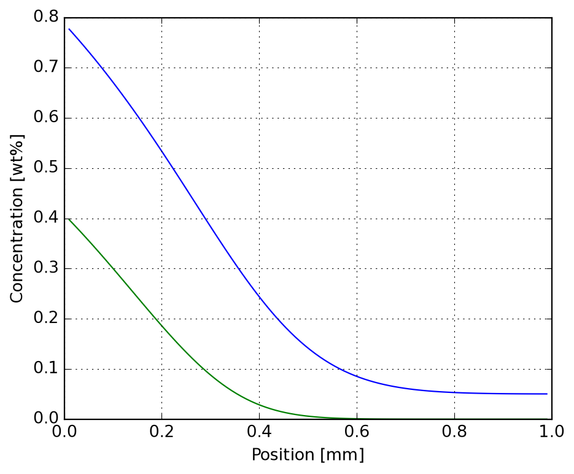
_ = plot_carbonitriding_mass_intake(inputs, solver)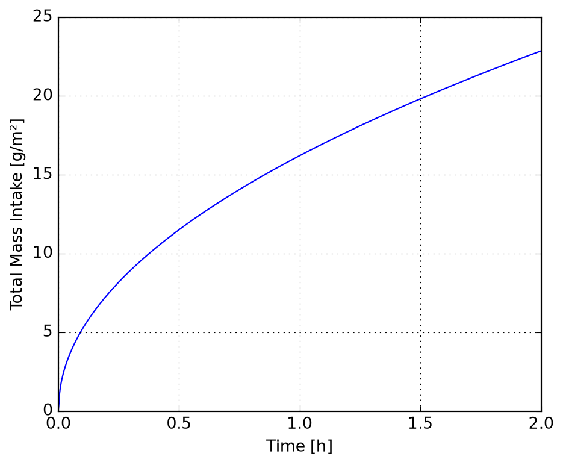
We simulate different multi-phase industrial heat treatment processes. Let’s configure the domain using geometric grid spacing (from \(10\text{ μm}\) to \(50\text{ μm}\)):
domain_ref = ImmersedNodeDomain1D(
depth = 0.002,
n = 100,
first_size = 10.0e-6,
last_size = 50.0e-6
)We define time-dependent boundary conditions (step functions) for Carburizing and Carbonitriding of typical automotive and aerospace steel alloys:
def get_carburizing_auto():
yc_ini = 0.0023
step1 = 2.0 * 3600.0
step2 = 3.0 * 3600.0 + step1
duration = step2 + 300.0 # 5 min cooling before quenching
def y_inf(t):
if t < step1:
return [0.011, 0.000] # Carburizing phase
elif t < step2:
return [0.000, 0.000] # Homogenization
else:
return [0.000, 0.000] # Cooling
def h_inf(t):
if t < step1:
return [1.0e-7, 0.0]
elif t < step2:
return [1.0e-9, 0.0]
else:
return [0.0, 0.0]
return yc_ini, duration, y_inf, h_infdef get_carburizing_aero():
yc_ini = 0.0016
step1 = 2.0 * 3600.0
step2 = 1.0 * 3600.0 + step1
step3 = 3.0 * 3600.0 + step2
duration = step3 + 300.0
def y_inf(t):
if t < step1:
return [0.011, 0.000]
elif t < step2:
return [0.000, 0.000]
elif t < step3:
return [0.000, 0.000]
else:
return [0.000, 0.000]
def h_inf(t):
if t < step1:
return [1.0e-6, 0.0]
elif t < step2:
return [1.0e-9, 0.0]
elif t < step3:
return [1.0e-9, 0.0]
else:
return [0.0, 0.0]
return yc_ini, duration, y_inf, h_infdef get_carbonitriding_auto():
yc_ini = 0.0023
step1 = 2.0 * 3600.0
step2 = 3.0 * 3600.0 + step1
duration = step2 + 300.0
def y_inf(t):
if t < step1:
return [0.011, 0.000] # Carburizing phase
elif t < step2:
return [0.000, 0.009] # Nitriding phase
else:
return [0.000, 0.000] # Cooling
def h_inf(t):
if t < step1:
return [1.0e-6, 0.0]
elif t < step2:
return [4.0e-9, 1.0e-7]
else:
return [0.0e-9, 1.0e-9]
return yc_ini, duration, y_inf, h_infdef get_carbonitriding_aero():
yc_ini = 0.0016
step1 = 2.0 * 3600.0
step2 = 1.0 * 3600.0 + step1
step3 = 3.0 * 3600.0 + step2
duration = step3 + 300.0
def y_inf(t):
if t < step1:
return [0.011, 0.000] # Carburizing phase
elif t < step2:
return [0.000, 0.000] # Transition phase
elif t < step3:
return [0.000, 0.003] # Nitriding phase
else:
return [0.000, 0.000] # Cooling
def h_inf(t):
if t < step1:
return [1.0e-6, 0.0]
elif t < step2:
return [4.0e-9, 0.0]
elif t < step3:
return [4.0e-9, 1.0e-7]
else:
return [0.0, 1.0e-9]
return yc_ini, duration, y_inf, h_infWe can run any of the configured reference processes. Let’s select and run one of the processes:
inputs_ref, solver_ref = workflow(get_carburizing_auto) # 15-20 g
# inputs_ref, solver_ref = workflow(get_carburizing_aero)
# inputs_ref, solver_ref = workflow(get_carbonitriding_auto) # 25 g
# inputs_ref, solver_ref = workflow(get_carbonitriding_aero) # 22 g
p = plot_carbonitriding_mass_intake(inputs_ref, solver_ref)
p.axes[0].set_xlim(0, 8)\(\displaystyle \left( 0.0, \ 8.0\right)\)
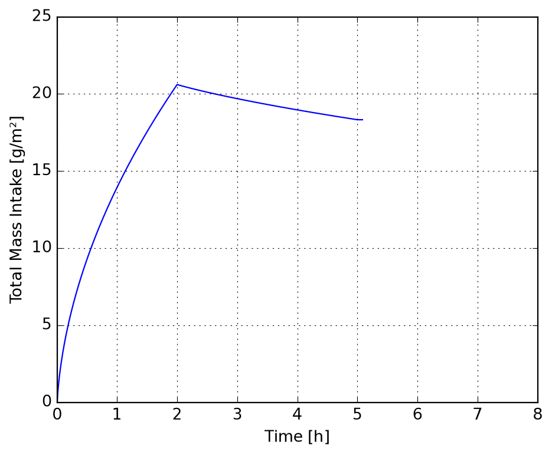
\(\displaystyle \left( 0.0, \ 1.2\right)\)
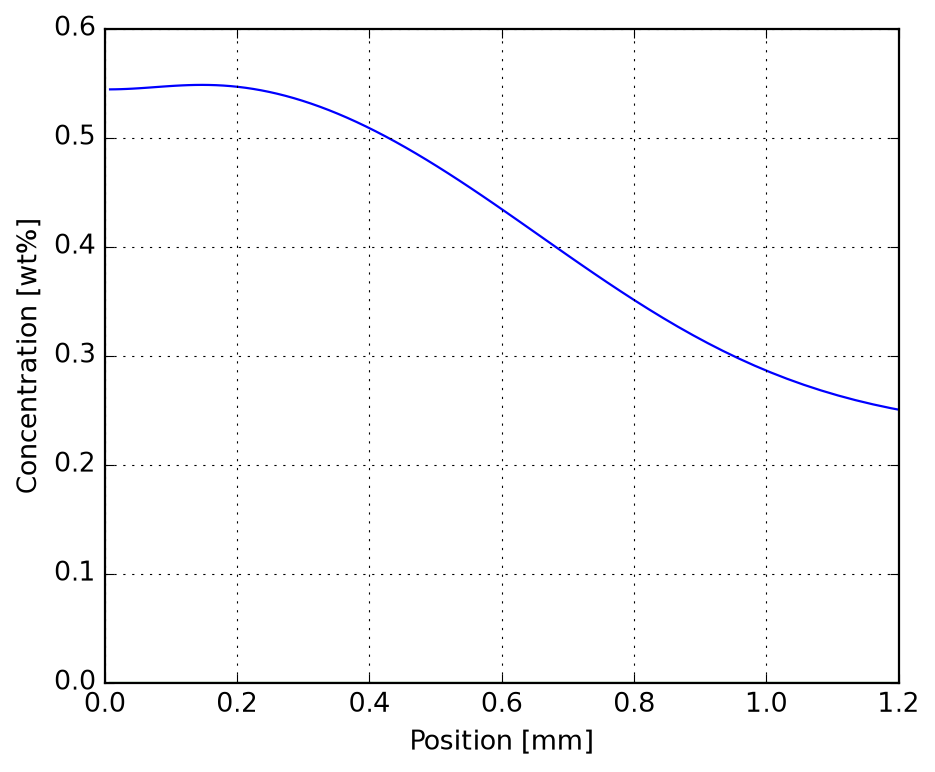
For highly flexible industrial profiles, we can simulate step-by-step sequentially, using the output of the previous step as the input of the next step:
Stepwise simulation complete.
Final surface C composition: 0.582 wt%
Final surface N composition: 0.393 wt%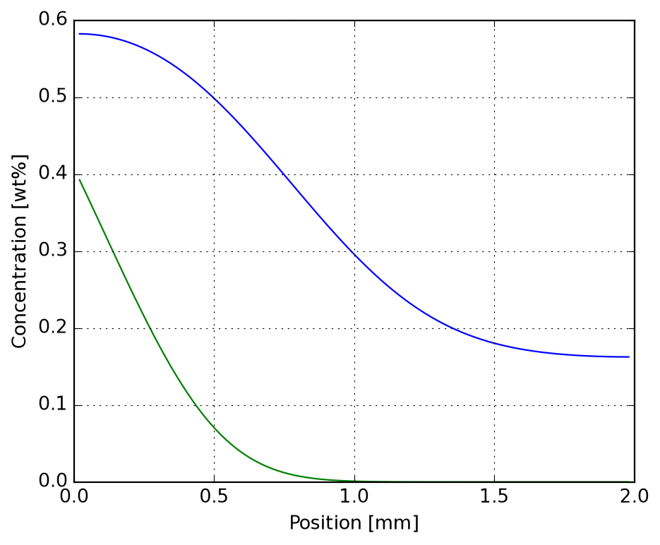
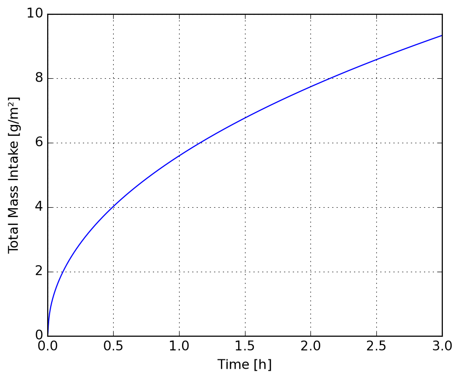
Data specification and import layer:
Lua-based dynamic species registry with named-indexed loading.
Supported parameterizations: Maier-Kelley, NASA7, NASA9, Shomate, GibbsPolynomial, Compound (linear combination with optional Gibbs deviation term).
Automatic molar mass calculation from elemental composition.
DatabaseLoader supports full-database or phase-subset loading.
Thermodynamic engine:
Evaluation of Cp, H, S, G for all parameterization models.
Generic over f64 and Dual<f64> (automatic differentiation).
Multi-range substances with correct range-boundary interpolation.
Tabulation of thermodynamic properties over a temperature scan.
System composition specification:
SystemComposition constructors:
from_compound_moles / from_compound_massesfrom_elemental_moles / from_elemental_massesInternal normalization to one mole of atoms.
Report formatter with elemental fractions.
Equilibrium calculation:
equilibrate_stoichiometric: support-based Gibbs minimization for stoichiometric phase assemblages.
Handles gas phases with pressure correction RT ln(p/p°).
Exposed to Python as equilibrate_stoichiometric(phases, comp, T, P).
Returns Equilibrium with amounts, Gibbs energies and a report formatter.
db_path = "sample/simple-calcination.lua"
db = CalphadDatabaseLoader(db_path)
db.phases['Al2O3', 'CO2', 'Calcite', 'Diaspore', 'H2O', 'Lime']phases = ["Calcite", "Lime", "CO2"]
db = CalphadDatabaseLoader(db_path, phases=phases)
phases = db.get_data()
phases{'Calcite': <Substance at 0x25921a445b0>,
'Lime': <Substance at 0x25921a44450>,
'CO2': <Substance at 0x25921a440e0>}for phase in phases.values():
print(phase.report(300.0), "\n")--- Calcite (Solid) ---
Molar mass | g/mol | 1.00086000e+02
Molar volume | cm³/mol | 3.69340000e+01
Entropy S0 | J/(mol.K) | 9.17800000e+01
Delta-Hf298 | kJ/mol | -1.20760500e+03
Elements:
* C: 1.000000
* Ca: 1.000000
* O: 3.000000
Properties at 300.00 K:
Specific heat | J/(mol.K) | 8.38182222e+01
Entropy | J/(mol.K) | 9.22974039e+01
Gibbs energy | kJ/mol | -1.23513948e+03
Enthalpy | kJ/mol | -1.20745026e+03
Reference: Robie et al. (1979)
--- Lime (Solid) ---
Molar mass | g/mol | 5.60770000e+01
Molar volume | cm³/mol | 1.67600000e+01
Entropy S0 | J/(mol.K) | 3.81000000e+01
Delta-Hf298 | kJ/mol | -6.34920000e+02
Elements:
* Ca: 1.000000
* O: 1.000000
Properties at 300.00 K:
Specific heat | J/(mol.K) | 4.21808889e+01
Entropy | J/(mol.K) | 3.83605068e+01
Gibbs energy | kJ/mol | -6.46350241e+02
Enthalpy | kJ/mol | -6.34842089e+02
Reference:
--- CO2 (Gas) ---
Molar mass | g/mol | 4.40090000e+01
Molar volume | cm³/mol | 2.44654037e+04
Entropy S0 | J/(mol.K) | 2.13780000e+02
Delta-Hf298 | kJ/mol | -3.93507679e+02
Elements:
* C: 1.000000
* O: 2.000000
Properties at 300.00 K:
Specific heat | J/(mol.K) | 3.72177412e+01
Entropy | J/(mol.K) | 2.14016203e+02
Gibbs energy | kJ/mol | -4.57643763e+02
Enthalpy | kJ/mol | -3.93438902e+02
Reference: NASA
print(phases["Lime"].tabulate())--- Lime (Solid) ---
T (K) | Cp | S | -(G-H298)/T | H-H298
---------+--------------+--------------+----------------+----------------
298.15 | 42.0468 | 38.1000 | 38.1000 | 0.00
300.00 | 42.1809 | 38.3605 | 38.1008 | 77.91
400.00 | 46.9797 | 51.2463 | 39.8251 | 4568.48
500.00 | 49.3320 | 62.0084 | 43.2168 | 9395.78
600.00 | 50.7212 | 71.1350 | 47.1289 | 14403.64
700.00 | 51.6558 | 79.0279 | 51.1349 | 19525.15
800.00 | 52.3479 | 85.9728 | 55.0643 | 24726.83
900.00 | 52.8992 | 92.1714 | 58.8491 | 29990.09
1000.00 | 53.3630 | 97.7695 | 62.4657 | 35303.78
1100.00 | 53.7696 | 102.8750 | 65.9106 | 40660.80
1200.00 | 54.1373 | 107.5695 | 69.1892 | 46056.41 print(phases["Calcite"].tabulate(t_min=237.0, t_max=1200.0, step=100.0))--- Calcite (Solid) ---
T (K) | Cp | S | -(G-H298)/T | H-H298
---------+--------------+--------------+----------------+----------------
237.00 | 67.6803 | 74.3162 | 94.0244 | -4670.83
298.15 | 83.4699 | 91.7800 | 91.7800 | 0.00
300.00 | 83.8182 | 92.2974 | 91.7816 | 154.74
400.00 | 97.0005 | 118.4319 | 95.2554 | 9270.61
500.00 | 104.5480 | 140.9480 | 102.1980 | 19375.01
600.00 | 109.8776 | 160.5024 | 110.3219 | 30108.28
700.00 | 114.1599 | 177.7711 | 118.7479 | 41316.27
800.00 | 117.8841 | 193.2627 | 127.1104 | 52921.91
900.00 | 121.2838 | 207.3462 | 135.2547 | 64882.39
1000.00 | 124.4820 | 220.2917 | 143.1197 | 77172.01
1100.00 | 127.5485 | 232.3007 | 150.6876 | 89774.43
1200.00 | 130.5254 | 243.5271 | 157.9615 | 102678.74 print(phases["CO2"].tabulate(step=300.0))--- CO2 (Gas) ---
T (K) | Cp | S | -(G-H298)/T | H-H298
---------+--------------+--------------+----------------+----------------
200.00 | 32.3282 | 199.9539 | 217.0335 | -3415.91
298.15 | 37.1352 | 213.7862 | 213.7862 | 0.00
300.00 | 37.2177 | 214.0162 | 213.7869 | 68.78
600.00 | 47.3559 | 243.2653 | 221.7589 | 12903.82
900.00 | 52.9739 | 263.6338 | 232.4882 | 28031.09
1000.00 | 54.3209 | 269.2862 | 235.8891 | 33397.06
1200.00 | 56.3061 | 279.3739 | 242.3165 | 44468.94
1500.00 | 58.3964 | 292.1799 | 251.0484 | 61697.22
1800.00 | 59.7373 | 302.9543 | 258.8254 | 79432.10
2100.00 | 60.6144 | 312.2332 | 265.8077 | 97493.49
2400.00 | 61.2367 | 320.3697 | 272.1299 | 115775.52
2700.00 | 61.7372 | 327.6120 | 277.8996 | 134223.60
3000.00 | 62.1722 | 334.1397 | 283.2025 | 152811.54
3300.00 | 62.5221 | 340.0827 | 288.1074 | 171518.68
3500.00 | 62.6638 | 343.7662 | 291.1836 | 184038.93 db = CalphadDatabaseLoader(db_path, phases=["Calcite", "Diaspore"])
phases = db.get_data()X = {"Calcite": 1.5, "Diaspore": 2.0}
comp = CalphadSystemComposition.from_compound_moles(phases, X)
print(comp.report())=== System Composition Report ===
Input Method: Compound Moles
Input Proportions:
* Calcite: 1.500000
* Diaspore: 2.000000
Computed Elemental Mole Fractions (normalized to 1 mole of atoms):
* Al: 0.129032
* C: 0.096774
* Ca: 0.096774
* H: 0.129032
* O: 0.548387Y = {"Calcite": 100.0, "Diaspore": 200.0}
comp = CalphadSystemComposition.from_compound_masses(phases, Y)
print(comp.report())=== System Composition Report ===
Input Method: Compound Masses
Input Proportions:
* Calcite: 100.000000
* Diaspore: 200.000000
Computed Elemental Mole Fractions (normalized to 1 mole of atoms):
* Al: 0.181871
* C: 0.054503
* Ca: 0.054503
* H: 0.181871
* O: 0.527252elements = {"Ca": 1.0, "C": 1.0, "O": 3.0}
comp = CalphadSystemComposition.from_elemental_moles(elements)
print(comp.report())=== System Composition Report ===
Input Method: Elemental Moles
Input Proportions:
* C: 1.000000
* Ca: 1.000000
* O: 3.000000
Computed Elemental Mole Fractions (normalized to 1 mole of atoms):
* C: 0.200000
* Ca: 0.200000
* O: 0.600000elements = {"Ca": 40.078, "C": 12.011, "O": 47.997}
comp = CalphadSystemComposition.from_elemental_masses(elements)
print(comp.report())=== System Composition Report ===
Input Method: Elemental Masses
Input Proportions:
* C: 12.011000
* Ca: 40.078000
* O: 47.997000
Computed Elemental Mole Fractions (normalized to 1 mole of atoms):
* C: 0.200000
* Ca: 0.200000
* O: 0.600000SystemComposition:print(
f"input_method: {comp.input_method}",
f"input_proportions: {comp.input_proportions}",
f"elements: {comp.elements}",
f"balace: {sum(comp.fractions)}",
sep="\n",
)input_method: Elemental Masses
input_proportions: {'O': 47.997, 'Ca': 40.078, 'C': 12.011}
elements: ['C', 'Ca', 'O']
balace: 1.0db = CalphadDatabaseLoader(db_path, phases=["Calcite"])
calcite = db.get_data()["Calcite"]
# Instantiate Dual for temperature at 300 K with deriv = 1.0 (dx/dx)
t = Dual.variable(300.0)
# Evaluate Gibbs energy using the Substance dynamic method
g = calcite.gibbs(t)
# Compute direct entropy at 300.0 K
s = calcite.entropy(300.0)
print(
f"Calcite at T = {t.value:.2f} K:",
f" G(T) = {g.value:.6f} J/mol",
f" dG/dT (autodiff) = {g.deriv:.6f} J/(mol.K)",
f" -S(T) (computed) = {-s:.6f} J/(mol.K)",
f" Difference = {abs(g.deriv - (-s)):.6e} J/(mol.K)",
sep="\n",
)Calcite at T = 300.00 K:
G(T) = -1235139.478760 J/mol
dG/dT (autodiff) = -92.297404 J/(mol.K)
-S(T) (computed) = -92.297404 J/(mol.K)
Difference = 1.421085e-14 J/(mol.K)t_eval = 1173.15
p_eval = 101325.0
X_eval = {"Calcite": 1.0, "Diaspore": 1.0}
phases = CalphadDatabaseLoader(db_path).get_data()
comp = CalphadSystemComposition.from_compound_moles(phases, X_eval)
phi = equilibrate_stoichiometric(phases, comp, t_eval, p_eval)
phi================================================================================
CHEMICAL EQUILIBRIUM REPORT
================================================================================
CONDITIONS:
Temperature .....: 1173.15 K (900.00 °C)
Pressure ........: 1.01325 bar (101325.0 Pa)
GLOBAL THERMODYNAMIC PROPERTIES:
Total Gibbs Energy (G) : -282444.8379 J
PHASE ASSEMBLAGE DATA:
Phase Name | Status | Amount (mol) | Pure Gibbs (J) | Total Gibbs (J)
----------------------------------------------------------------------------
Al2O3 | Stable | 5.555556E-2 | -1810814.6226 | -100600.8124
Composition: Al: 2, O: 3
CO2 | Stable | 1.111111E-1 | -676803.2891 | -75200.3654
Composition: C: 1, O: 2
Calcite | Inactive | 0.000000E0 | -1390659.4916 | -0.0000
Composition: C: 1, Ca: 1, O: 3
Diaspore | Inactive | 0.000000E0 | -1097036.8940 | -0.0000
Composition: Al: 1, H: 1, O: 2
H2O | Stable | 5.555556E-2 | -489435.5800 | -27190.8656
Composition: H: 2, O: 1
Lime | Stable | 1.111111E-1 | -715075.1512 | -79452.7945
Composition: Ca: 1, O: 1
================================================================================phases = CalphadDatabaseLoader(db_path).get_data()
species_names = ["Calcite", "Lime", "CO2", "Diaspore", "H2O", "Al2O3"]
comp = CalphadSystemComposition.from_compound_moles(phases, X_eval)
eq_ref = equilibrate_stoichiometric(phases, comp, T_REF, p_eval)
h_ref = sum(
eq_ref.amounts.get(n, 0.0) * phases[n].enthalpy(T_REF)
for n in species_names
)
m_sys = sum(
eq_ref.amounts.get(n, 0.0) * phases[n].molar_mass
for n in species_names
)
header = (
f"{'T (K)':<10} | {'CaCO3':>8} | {'CaO':>8} | {'CO2':>8}"
f" | {'Diaspore':>10} | {'H2O':>8} | {'Al2O3':>8} | {'dH (J/g)':>10}"
)
print(header)
print("-" * len(header))
def print_eq(t, eq, dh):
print(
f"{t:<10.2f} | "
f"{eq.amounts.get('Calcite', 0.0):>8.4f} | "
f"{eq.amounts.get('Lime', 0.0):>8.4f} | "
f"{eq.amounts.get('CO2', 0.0):>8.4f} | "
f"{eq.amounts.get('Diaspore', 0.0):>10.4f} | "
f"{eq.amounts.get('H2O', 0.0):>8.4f} | "
f"{eq.amounts.get('Al2O3', 0.0):>8.4f} | "
f"{dh:>10.2f}"
)
t_arr = np.arange(300.0, 1500.1, 100.0).tolist()
t_arr = sorted(t_arr + [T_REF])
for t in t_arr:
eq = equilibrate_stoichiometric(phases, comp, t, p_eval)
h_t = sum(
eq.amounts.get(n, 0.0) * phases[n].enthalpy(t)
for n in species_names
)
dh = (h_t - h_ref) / m_sys if m_sys > 0 else 0.0
print_eq(t, eq, dh)T (K) | CaCO3 | CaO | CO2 | Diaspore | H2O | Al2O3 | dH (J/g)
-------------------------------------------------------------------------------------------
298.15 | 0.1111 | 0.0000 | 0.0000 | 0.1111 | 0.0000 | 0.0000 | 0.00
300.00 | 0.1111 | 0.0000 | 0.0000 | 0.1111 | 0.0000 | 0.0000 | 1.58
400.00 | 0.1111 | 0.0000 | 0.0000 | 0.1111 | 0.0000 | 0.0000 | 95.99
500.00 | 0.1111 | 0.0000 | 0.0000 | 0.1111 | 0.0000 | 0.0000 | 202.81
600.00 | 0.1111 | 0.0000 | 0.0000 | 0.0000 | 0.0556 | 0.0556 | 580.42
700.00 | 0.1111 | 0.0000 | 0.0000 | 0.0000 | 0.0556 | 0.0556 | 697.68
800.00 | 0.1111 | 0.0000 | 0.0000 | 0.0000 | 0.0556 | 0.0556 | 819.07
900.00 | 0.1111 | 0.0000 | 0.0000 | 0.0000 | 0.0556 | 0.0556 | 944.13
1000.00 | 0.1111 | 0.0000 | 0.0000 | 0.0000 | 0.0556 | 0.0556 | 1072.57
1100.00 | 0.1111 | 0.0000 | 0.0000 | 0.0000 | 0.0556 | 0.0556 | 1204.27
1200.00 | 0.0000 | 0.1111 | 0.1111 | 0.0000 | 0.0556 | 0.0556 | 2382.46
1300.00 | 0.0000 | 0.1111 | 0.1111 | 0.0000 | 0.0556 | 0.0556 | 2507.13
1400.00 | 0.0000 | 0.1111 | 0.1111 | 0.0000 | 0.0556 | 0.0556 | 2633.57
1500.00 | 0.0000 | 0.1111 | 0.1111 | 0.0000 | 0.0556 | 0.0556 | 2761.69names = ["HALITE", "CORUNDUM", "C3A1", "C1A1", "C1A2", "C1A6"]
db = CalphadDatabaseLoader("hallstedt1990.lua", names)
phases = db.get_data()
t = 1400.0
p = 101325.0
header = (
f"{'x(Al2O3)':<10} | "
f"{'HALITE':>8} | "
f"{'C3A1':>8} | "
f"{'C1A1':>8} | "
f"{'C1A2':>8} | "
f"{'C1A6':>8} | "
f"{'CORUNDUM':>10}"
)
print(header)
print("-" * len(header))
x_arr = np.arange(0.0, 1.01, 0.05).tolist()
x_arr = sorted(x_arr + [2/3, 6/7])
for x in x_arr:
X_moles = {"HALITE": 1.0 - x, "CORUNDUM": x}
comp = CalphadSystemComposition.from_compound_moles(phases, X_moles)
eq = equilibrate_stoichiometric(phases, comp, t, p)
total = sum(eq.amounts.get(n, 0.0) for n in names)
def norm(n):
if total <= 0:
return 0.0
return abs(eq.amounts.get(n, 0.0)) / total
print(
f"{x:<10.4f} | "
f"{norm('HALITE'):>8.2f} | "
f"{norm('C3A1'):>8.2f} | "
f"{norm('C1A1'):>8.2f} | "
f"{norm('C1A2'):>8.2f} | "
f"{norm('C1A6'):>8.2f} | "
f"{norm('CORUNDUM'):>10.4f}"
)x(Al2O3) | HALITE | C3A1 | C1A1 | C1A2 | C1A6 | CORUNDUM
------------------------------------------------------------------------------
0.0000 | 1.00 | 0.00 | 0.00 | 0.00 | 0.00 | 0.0000
0.0500 | 0.94 | 0.06 | 0.00 | 0.00 | 0.00 | 0.0000
0.1000 | 0.86 | 0.14 | 0.00 | 0.00 | 0.00 | 0.0000
0.1500 | 0.73 | 0.27 | 0.00 | 0.00 | 0.00 | 0.0000
0.2000 | 0.50 | 0.50 | 0.00 | 0.00 | 0.00 | 0.0000
0.2500 | 0.00 | 1.00 | 0.00 | 0.00 | 0.00 | 0.0000
0.3000 | 0.00 | 0.67 | 0.33 | 0.00 | 0.00 | 0.0000
0.3500 | 0.00 | 0.43 | 0.57 | 0.00 | 0.00 | 0.0000
0.4000 | 0.00 | 0.25 | 0.75 | 0.00 | 0.00 | 0.0000
0.4500 | 0.00 | 0.11 | 0.89 | 0.00 | 0.00 | 0.0000
0.5000 | 0.00 | 0.00 | 1.00 | 0.00 | 0.00 | 0.0000
0.5500 | 0.00 | 0.00 | 0.78 | 0.22 | 0.00 | 0.0000
0.6000 | 0.00 | 0.00 | 0.50 | 0.50 | 0.00 | 0.0000
0.6500 | 0.00 | 0.00 | 0.14 | 0.86 | 0.00 | 0.0000
0.6667 | 0.00 | 0.00 | 0.00 | 1.00 | 0.00 | 0.0000
0.7000 | 0.00 | 0.00 | 0.00 | 0.92 | 0.08 | 0.0000
0.7500 | 0.00 | 0.00 | 0.00 | 0.75 | 0.25 | 0.0000
0.8000 | 0.00 | 0.00 | 0.00 | 0.50 | 0.50 | 0.0000
0.8500 | 0.00 | 0.00 | 0.00 | 0.08 | 0.92 | 0.0000
0.8571 | 0.00 | 0.00 | 0.00 | 0.00 | 1.00 | 0.0000
0.9000 | 0.00 | 0.00 | 0.00 | 0.00 | 0.25 | 0.7500
0.9500 | 0.00 | 0.00 | 0.00 | 0.00 | 0.07 | 0.9286
1.0000 | 0.00 | 0.00 | 0.00 | 0.00 | 0.00 | 1.0000